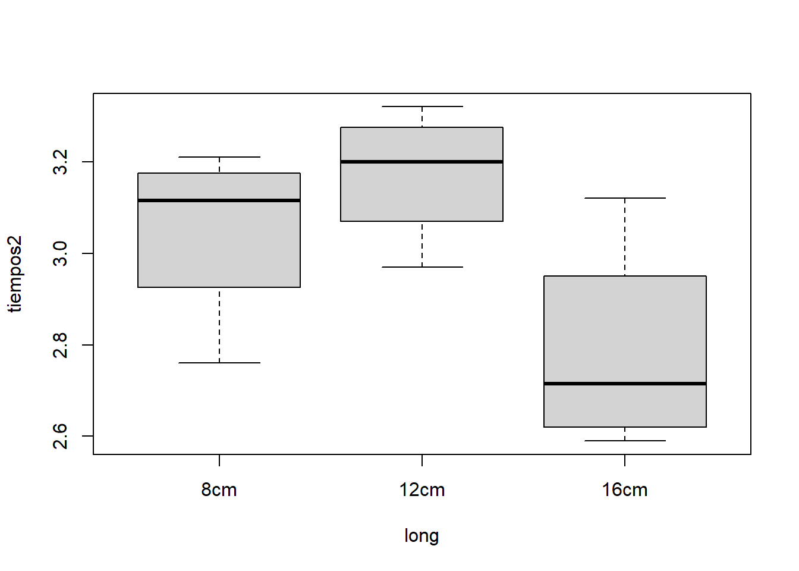

tiempos <- c(2.97, 3.23, 3.09, 2.65, 2.78, 3.21,
2.59, 3.14, 3.17, 3.12, 3.32, 2.76)
ala <- c("12 cm", "12 cm", "12 cm", "8 cm", "8 cm", "16 cm",
"8 cm", "16 cm", "16 cm", "12 cm", "16 cm", "8 cm")
# conversión a factor con el orden de interés para el análisis
ala <- factor(ala, levels = c("8 cm", "12 cm", "16 cm"))
# Estructura de data.frame
heli3 <- data.frame(tiempos, ala)
heli2 <- data.frame(tiempos, ala)[ala != "12 cm", ]2 Diseño de experimentos
(“2025-12-22”)
En este Capítulo se estudia un tipo especial de modelo lineal, los modelos de diseño de experimentos, cuyo desarrollo metodológico, ligado al del análisis de la varianza, se debe a Ronald Aylmer Fisher hace justo un siglo (1925-1926). Como se indicó en el Capítulo 1, en estos modelos la variable respuesta considerada debe ser cuantitativa/numérica continua. Por su parte, la variable o variables explicativas, cuya influencia sobre la respuesta se analiza, deben ser categóricas, denominándose en este contexto factores o variables controlables.
Al igual que en los modelos lineales de regresión tratados en el Capítulo 1, se distinguen modelos con un solo factor, los más simples, y modelos con dos o más factores, en los que se consideran tanto los efectos individuales de cada factor, como las posibles interacciones entre ellos. A continuación, se mencionan algunos tipos de diseño que serán desarrollados:
- Diseños unifactoriales, con un único factor con dos o más niveles (tratamientos).
- Diseños bifactoriales: con o sin réplicas, y con o sin interacción (diseños por bloques).
- Diseños factoriales (con más de dos factores) y, de forma breve, el caso particular de dos niveles (\(2^k\)).
El término efecto que se utiliza aquí es equivalente al concepto de parámetro en regresión lineal, es decir, es la medida de la influencia del factor sobre la variable respuesta.
Entre las referencias recomendadas para este Capítulo se encuentran Peña (2002) (Capítulos 2 a 4), Montgomery (2008) —considerado un texto clásico dedicado íntegramente al diseño y análisis de experimentos— y Faraway (2004) (Capítulos 14 a 16), con un enfoque basado en regresión. Además, expreso mi agradecimiento a mis compañeros, Dr. Licesio J. Rodríguez Aragón (UCLM) y Dr. Juan M. Rodríguez Díaz (USAL) por sus aportaciones y materiales compartidos, que han resultado de gran utilidad en la elaboración de este contenido.
El enfoque tratado en este Capítulo corresponde al diseño de experimentos denominado clásico, en contraposición al diseño óptimo de experimentos, mi línea principal de investigación, en la que se considera el enfoque experimental en modelos de regresión (véase López-Fidalgo (2023)).
2.1 Nociones y principios básicos
¿Qué es un experimento?
Según la definición de la RAE, se trata de una “operación destinada a descubrir, comprobar o demostrar determinados fenómenos o principios científicos…”. Experimento (RAE) Entre sus sinónimos se encuentran prueba y ensayo.
Enlazándolo con el párrafo inicial del Capítulo, un experimento consiste en observar/medir el valor de la variable respuesta (cuantitativa), para distintos niveles (categorías) del factor o factores que previsiblemente influyen en dicha respuesta. Algunos ejemplos ilustrativos son:
- Medición del peso de jamones (kg), para distintos niveles del factor “genética”, y/o del factor “estación”, etc.
- Medición de emisiones directas de \(CO_2\) de un motor (g \(CO_2\)/s), para distintos niveles del factor “presión de admisión”, y/o “temperatura de admisión”, y/o “% de mezcla de metanol”, etc.
- Medición del tiempo de vuelo de helicópteros de papel (segundos), para distintos niveles del factor “longitud de las alas”, y/o “anchura de las alas”, y/o “gramaje del papel”, y/o “uso de clip”, etc.
¿Qué significa diseñar un experimento?
Diseñar un experimento consiste en determinar las condiciones experimentales, es decir, los niveles del factor, o combinación de niveles (en caso de haber varios factores), denominados genéricamente tratamientos, para los que se medirá la variable respuesta. Se espera (desea) que los tratamientos generen cambios (significativos) en la respuesta. En tal caso, se obtiene información relevante sobre el fenómeno estudiado, lo que permite identificar las causas del cambio (causalidad, que no ¡casualidad!). No obstante, durante el experimento pueden influir variables no controlables por el experimentador (véase Sección 2.1.3).
Siguiendo con los ejemplos,
- determinar varias genéticas (Duroc, Traxx, Magnus … ) para comparar el peso del jamón entre ellas, o la combinación de genéticas y estaciones (invierno, primavera, verano, otoño), etc. para identificar las razones del cambio en el peso del jamón.
- determinar los niveles de presión de admisión (1 bar, 1.5 bares…), temperatura de admisión (35ºC, 65ºC …), % de mezcla de metanol (0%, 10%, 20% … de sustitución -energía-), etc. que se van a combinar para estudiar su efecto directo y/o conjunto sobre las emisiones directas de \(CO_2\) del motor.
- determinar la longitud de las alas (10, 15, 20 cm …), la anchura de las alas (4, 6, 8 cm …), el gramaje del papel (80 g/m\(^2\), 120 g/m\(^2\) …), el uso de clip (con clip, sin clip) para analizar su efecto sobre el tiempo de vuelo de los helicópteros de papel.
En el diseño óptimo de experimentos, se determinan los valores óptimos de la variable (o variables) explicativa(s) \(X\) en los que observar la respuesta \(Y\). Por ejemplo, en regresión lineal simple (recta de regresión), los 2 valores extremos de \(X\) son los más informativos, dado que una recta queda determinada por 2 puntos. En regresión cuadrática, se requieren 3 “puntos”, los dos extremos y un punto intermedio para capturar la curvatura.
En ambos enfoques de diseño, clásico u óptimo, el objetivo es obtener estimadores precisos de los parámetros/efectos.
¿Por qué es importante diseñar un experimento?
En una sola palabra, por “costes”…
Un buen diseño de experimento permite ahorrar tiempo, recursos (…costes, en el sentido amplio de la palabra), y asegura un análisis correcto de los datos. Además, responde al principio de “pensar antes de actuar”.
Como muestra, el ejemplo del motor mencionado arriba, es un ejemplo real en el que se propuso un diseño que permitió reducir en más del 90% el número de experimentos que debían hacerse, ayudando además a planificar correctamente el plan de experimentación y el análisis adecuado de los datos (véase Sección 2.6.3).
A continuación se muestran un par de ejemplos en esta línea de la importancia del diseño, ambos del profesor Jesús López Fidalgo, que se detallan en un par de sus libros (López-Fidalgo (2015), Cía Mina y López-Fidalgo (2024)).
2.1.1 Paradoja de Simpson
A grandes rasgos, se tienen los resultados de un nuevo tratamiento, Fraudol, y del tratamiento habitual, Curamina:
| Tratamiento | Mejoran | No mejoran | % Mejora |
|---|---|---|---|
| Curamina | 20 | 20 | 50% |
| Fraudol | 24 | 16 | 60% |
Según estos datos, el Fraudol mejora los resultados de la Curamina. El experimento es balanceado, en el sentido de haber suministrado el tratamiento al mismo número de pacientes (40 en cada caso). Pero, si se desglosan los datos por sexo:
para hombres:
Tratamiento Mejoran No mejoran % Mejora Curamina 12 18 40% Fraudol 3 7 30% para mujeres:
Tratamiento Mejoran No mejoran % Mejora Curamina 8 2 80% Fraudol 21 9 70%
las conclusiones cambian, el Fraudol es peor en ambos grupos. A pesar de que el experimento también es balanceado por sexo (40 hombres y 40 mujeres), pero no dentro de cada tratamiento.
Moraleja: En algunas ocasiones, los factores no considerados pueden invertir las conclusiones.
Pregunta
¿Es capaz de explicar la causa del cambio de conclusiones?
2.1.2 Diseño de la balanza
¿Cuál es la mejor estrategia experimental para averiguar el peso de 2 objetos, si sólo se pueden realizar 2 pesadas utilizando una balanza de 2 platos?
Esta pregunta encierra un problema de diseño del experimento para realizar las 2 pesadas. El diseño “intuitivo” consiste en tomar el primer objeto ponerlo en la balanza y poner los contrapesos en la otra balanza para estimar su peso. Y repetir el procedimiento con el segundo objeto.
¿Existe un diseño mejor?
Sí, el diseño óptimo consiste en utilizar los 2 objetos en las 2 pesadas. En la primera pesada se ponen los 2 objetos juntos y se estima el peso conjunto, y en la segunda pesada se pone un objeto en cada balanza y se estima la diferencia de peso.
¿Por qué es mejor?
Porque la precisión del experimento es mayor, equivalentemente, el error de estimación es menor. Utilizamos el siguiente modelo para el peso: \[y = P + \epsilon\] donde \(y\) es el peso que obtenemos con los contrapesos, \(P\) es el peso real del objeto, y \(\epsilon\) es el error de estimación, reflejo de la precisión del sistema de medida, para el que se puede suponer una distribución de probabilidad, \(\epsilon \sim N(0, \sigma^2)\). Con este modelo, con el diseño intuitivo obtendremos \(y_1\) e \(y_2\) como estimaciones de sus pesos reales, \(P_1\) y \(P_2\). Y el error de tales estimaciones es \(\sigma\). Además, ambas estimaciones son independientes, y son las estimaciones máximo-verosímiles. Con el diseño óptimo, obtendremos \(y_3\) e \(y_4\) como estimaciones de \(P_1 + P_2\) y de \(P_1-P_2\) (por ejemplo). Por lo que, \[ y_3 + y_4 = P_1 + P_2 + P_1 - P_2 \rightarrow \hat P_1 = \frac{y_3 + y_4}{2}\] \[ y_3 - y_4 = P_1 + P_2 - P_1 + P_2 \rightarrow \hat P_2 = \frac{y_3 - y_4}{2}\] Y, teniendo en cuenta las propiedades de la varianza, \[\text{var}(\hat P_1) = \text{var} \left(\frac{y_3 + y_4}{2} \right) = \frac{\text{var}(y_3) + \text{var}(y_4)}{4} = \frac{\sigma^2}{2} = \text{var}(\hat P_2) \] Por lo que el error de estas estimaciones es \(\sigma/\sqrt 2\). Además, también son las estimaciones máximo-verosímiles, y, aunque parece contrario a la lógica, estas estimaciones son independientes, porque \(cov(\hat P_1, \hat P_2) = 0\), es decir que son incorreladas, y por normalidad, incorrelación implica independencia.
2.1.3 Principios básicos del DoE
Aleatorización
La aleatorización es la piedra angular de los métodos estadísticos. Por aleatorización se entiende, tanto la asignación de los tratamientos a las unidades experimentales donde se medirá la variable respuesta, como el orden en que se realizan las mediciones, en el sentido de que todas las unidades experimentales tienen la misma probabilidad de ser asignadas a un tratamiento, o de ser elegida en un orden concreto. De este modo se evita la dependencia entre observaciones, pues uno de los requisitos estadísticos es que las respuestas (o los errores) sean variables aleatorias independientes. Dicho de otro modo, la aleatorización permite justificar el uso de los procedimientos estadísticos habituales, como defendió Fisher: “La aleatorización es el único medio por el cual podemos garantizar la validez de los tests de significación, pues asegura que las causas desconocidas de variación actúen de manera imparcial sobre los tratamientos.” De hecho, desordenar los experimentos no es lo mismo que la asignación aleatoria. En Cía Mina y López-Fidalgo (2024) se comenta la distinción entre ambos, hablando del planteamiento de la catadora de té. Otra manera de verlo es con el lanzamiento de una moneda (justa). Al lanzarla 6 veces, o 10, cualquiera diría que la moneda es justa si salen 3 caras, o 5 caras, según sea el caso. Ahora bien, si salen primero las 3 caras y luego las 3 cruces, o las 5 caras y luego las 5 cruces, alguno sospecharía de que la moneda sea justa, cuando refleja una combinación aleatoria posible.
Así, la aleatorización ayuda a promediar los efectos de los factores que no se conocen o que no están bajo control. También a mitigar la posible confusión que se ha mostrado en la paradoja de Simpson. En el ejemplo de los helicópteros de papel, la asignación aleatoria se aplica tanto en los distintos factores (tipo de papel, clip, longitud, etc.), como en el proceso de construcción, y en el de medición de los tiempos de caída. De este modo, se reducen o evitan posibles sesgos.
El uso de la aleatorización, la asignación de tratamientos a unidades experimentales, distingue los estudios experimentales de los observacionales (que suelen ser la mayoría).
En ausencia de un orden natural (forzoso) la independencia se garantiza por aleatorización del orden y de la asignación.
Réplicas
Una réplica es la realización de un experimento completo, con los mismos tratamientos, en unidades experimentales distintas, lo que implica que las observaciones son independientes. Permiten estimar correctamente la variabilidad de los resultados y proporciona una medida de la precisión del experimento. No hay que confundirla con la repetición de la medición para una misma unidad experimental, lo que supone dependencia entre las observaciones y, por tanto, un tratamiento estadístico distinto. Por ejemplo, son réplicas 2 helicópteros distintos con el mismo tratamiento (combinación de niveles de los factores) para los que se mide el tiempo de caída. Es repetición lanzar 2 veces el mismo helicóptero.
Matemáticamente, bajo la condición (habitual) de homogeneidad de varianzas, \(\sigma^2_{\bar Y} = \sigma^2/n\), por lo que, replicando el experimento se aumenta \(n\) y se consigue reducir la varianza de la media, mejorando la precisión.
Bloques
El uso de bloques sirve para introducir en la experimentación factores controlables que no son de interés en sí mismos en el estudio, pero que pueden influir en la respuesta y pueden ayudar a controlar la variabilidad de las mismas. También se pueden introducir por necesidad práctica, por ejemplo, para eliminar su influencia. Habitualmente, se dividen las unidades experimentales en bloques homogéneos, buscando que las diferencias entre los bloques sean menores que las diferencias entre los tratamientos. Además, así se reduce la variabilidad residual, lo que permite aumentar la precisión del experimento, es decir que las comparaciones entre tratamientos sean más precisas para detectar diferencias significativas. Como se ha mencionado, con la introducción de bloques se busca reducir la varianza residual, \(\sigma^2\), y por tanto, la precisión del experimento (\(\sigma^2_{\bar Y} = \sigma^2/n\)).
Por ejemplo, lo ideal es que los helicópteros se hagan con el mismo tipo de papel (condiciones homogéneas). Pero, si no es posible, se pueden tener en cuenta en el diseño del experimento dos tipos de papel: normal y reciclado (ambos de 80gr). No se espera que el tipo de papel influya en el tiempo de vuelo, o, al menos, se espera una menor influencia que el factor de interés.
Factorialización
Se añade aquí la factorialización, a los tres principios anteriores, siguiendo a Montgomery (2008). El enfoque correcto para estudiar la influencia de varios factores es realizar un experimento factorial, que consiste en variar conjuntamente los factores considerados, en lugar de variar sólo uno cada vez. Una idea de su importancia se puede inferir al ver que aparece en los nombres de todos los diseños que se van a ver en este Capítulo.
Para el ejemplo del helicóptero, si consideramos como factores la longitud del ala, su anchura y el uso (o no) del clip, el diseño factorial consistirá en combinar los distintos niveles de longitud de ala, con los distintos niveles de anchura y con el uso, o no, del clip.
Ortogonalidad
Cía Mina y López-Fidalgo (2024) también incluye la ortogonalidad como principio considerado por Fisher. Con ella se busca que los estimadores no estén correlacionados, lo que ocurre cuando \(X^\top X\) es diagonal (siendo \(X\) la matriz del diseño). Pero esto no siempre es posible, bien por razones matemáticas, bien por razones prácticas. Si no se tiene la ortogonalidad, se podría conseguir aplicando transformaciones lineales al modelo, lo que implica que los nuevos parámetros perderían la interpretación real/física del modelo inicial.
2.1.4 Procedimiento estadístico de un experimento
Siguiendo el apartado “Directrices para el diseño de experimentos” de Peña (2002) y el apartado “Guidelines for Designing Experiments” de Montgomery (2008), el procedimiento estadístico de un experimento se puede resumir en los siguientes pasos:
- Planteamiento del problema
- Definición de las variables involucradas. Variable respuesta y factores controlables/explicativos, no controlables, ruido, así como sus niveles y o rangos.
- Selección del modelo.
- Elección del diseño experimental (1 sólo factor, varios, con o sin réplicas, con bloques, secuencial … )
- Realización del experimento, mediciones de la variable respuesta.
- Análisis estadístico de los datos obtenidos.
- Conclusiones y recomendaciones.
Ahora bien, Peña (2002), insiste en que el diseño del experimento debe responder a una pregunta científica clara.
2.2 Modelo ANOVA
La herramienta para el análisis de los modelos de diseño de experimentos es el modelo de ANálisis de la VArianza, modelo ANOVA (que ha aparecido, brevemente, en regresión, en la Sección 1.2.7). Así, para cada tipo de diseño experimental, existe un modelo ANOVA asociado, que permite estimar adecuadamente los efectos de los factores y contrastar hipótesis sobre los mismos.
El modelo ANOVA es un modelo lineal que permite modelizar (de forma aproximada, como es sabido) el comportamiento de una variable respuesta cuantitativa, \(Y\), mediante un función lineal de uno o varios factores, \(X_1, \ldots, X_k\). Se basa en descomponer toda la variabilidad de la respuesta en diferentes componentes estimables, debidos al factor o factores considerados y al error aleatorio inherente en cualquier proceso de medición. Esta descomposición se denomina suma de cuadrados.
A continuación, se van a ir detallando los casos más sencillos de diseño experimental.
2.3 Diseño unifactorial
Es el caso más simple, un único factor, digamos A, con 2 o más niveles distintos. El diseño consiste en determinar dichos niveles, genéricamente \(a\) niveles, (por ejemplo, las distintas presiones de admisión en el caso del motor) y distribuir el número total de observaciones \(N\) entre dichos niveles, tomando \(n_i\) observaciones en cada uno de los \(a\) niveles distintos del factor, de modo que \(\sum_{i=1}^a n_i = N\). Si \(n_i = n, \forall i \in a\), se habla de diseño balanceado.
2.3.1 ANOVA unifactorial
Se puede encontrar con las siguientes denominaciones: ANOVA de 1 factor, ANOVA univariante, ANOVA de una vía… (One-way ANOVA). Su aplicación más extendida es la de comparación de medias de varios grupos.
Es habitual en los libros (véase Peña (2002), Montgomery (2008), etc.) introducir el ANOVA como “ampliación” del procedimiento inferencial de comparación de dos muestras (visto en la asignatura Estadística I). De hecho, cuando hay un único factor, con 2 niveles distintos, el resultado del contraste ANOVA es equivalente al resultado del contraste t de Student.
En este caso la formulación como modelo lineal es ligeramente distinta (pero equivalente) al del modelo de regresión lineal. De hecho, hay distintas formulaciones, el denominado modelo de los efectos se define como: \[ y_{ij} = \mu + \tau_i + \epsilon_{ij}, \qquad i=1,\ldots,a; \; j=1,\ldots,n_i,\] donde \(y_{ij}\) son las respuestas obtenidas como resultado del experimento para la observación \(j\) del nivel \(i\) del factor, con \(a\) niveles posibles y \(n_i\) respuestas en cada nivel, teniendo \(\sum_{i=1}^a n_i = N\) respuestas en total ; \(\mu\) es la media global de dichas respuestas, común a todos los niveles, \(\tau_i\) es el efecto del nivel \(i\) del factor respecto de \(\mu\) (efecto del tratamiento i-ésimo: parámetro que mide su influencia en la respuesta media, \(\tau_i = \mu_i - \mu\), donde \(\mu_i\) es la media de cada nivel) y \(\epsilon_{ij}\) es el error aleatorio asociado a cada respuesta. Con este planteamiento se tiene la restricción: \(\sum_{i=1}^a\tau_i = 0\).
La analogía con el modelo de regresión es directa, \(\mu\) es el equivalente a \(\beta_0\), y \(\tau_i\) es el equivalente a \(\beta_i\) de una variable categórica dicotómica dummy.
Otra formulación alternativa, pero equivalente, al modelo planteado es el modelo de las medias: \[y_{ij} = \mu_i + \epsilon_{ij}, \qquad i=1,\ldots,a; \; j=1,\ldots,n_i.\]
En la práctica es más utilizado el modelo de los efectos que el modelo de las medias. Pero en
Ral aplicar la funciónsummary()se obtiene un pseudo modelo de las medias.
Los supuestos habituales sobre el error son los mismos que en el modelo de regresión:
- Esperanza nula: \(E[\epsilon_{ij}] = 0 \quad \forall i, j\),
- Varianza constante: \(Var[\epsilon_{ij}] = \sigma^2 \quad \forall i, j\),
- Independencia: \(E[\epsilon_{ij} \epsilon_{rk}] = 0\) si \(i \ne r\) o \(j \ne k\) (en distribuciones normales, incorrelación implica independencia),
- Distribución normal.
2.3.2 Estimación de los efectos
Los efectos (parámetros) se estiman como en cualquier modelo lineal, por el método de máxima verosimilitud, equivalente al método de mínimos cuadrados. Concretamente:
- \(\hat \mu = \bar y_{\cdot\cdot} = \frac{1}{N} \sum_{i,j} y_{ij},\)
- \(\hat \tau_i = \hat \mu_i - \hat \mu\) siendo \(\hat \mu_i = \bar y_{i\cdot}= \frac{1}{n_i} \sum_{j=1}^{n_i} y_{ij},\)
dado que ahora el modelo depende de las \(a\) medias \(\mu_i\) y de \(\sigma^2\), siendo la función de log-verosimilitud en este caso: \[ \log f(\mathbf{\mu}, \sigma^2)= -\frac{N}{2}\log \sigma^2 - \frac{1}{2\sigma^2}\sum_{i=1}^a \sum_{j=1}^{n_i}(y_{ij}-\mu_i)^2,\] donde \(\mu\) es el vector de medias \((\mu_1, \ldots, \mu_a)\).
En este caso, los residuos se obtienen como \(\hat \epsilon_{ij} = y_{ij} - \bar y_{i\cdot}\) y se cumple que para cada nivel \(i\): \(\sum_{j=1}^{n_i}\hat \epsilon_{ij}=0\). Por lo que se tienen \(a\) ecuaciones de restricción entre los residuos, lo que da lugar a los \(N-a\) grados de libertad con los que se calculan dichos residuos.
Como en regresión, se pueden deducir las distribuciones de los estimadores:
- \(\hat \mu \sim N(\mu, \sigma^2/N)\)
- \(\hat \mu_i \sim N(\mu_i, \sigma^2/n_i)\)
2.3.3 Contraste ANOVA unifactorial
En este caso, el contraste de hipótesis (ANOVA) a realizar se enuncia así: \[ \left. \begin{array}{l} H_0: \tau_1 = \ldots = \tau_a = 0 \\ H_1: \text{Al menos un } \tau_i \neq 0 \end{array} \right\} \quad \equiv \quad \left. \begin{array}{l} H_0: \mu_1 = \ldots = \mu_a \\ H_1: \text{Al menos una } \mu_i \text{ es distinta.} \end{array} \right\} \] Como en regresión, se plantea el modelo más sencillo posible \((H_0: \tau_i = 0, \forall i)\), esto es, \(\hat y_{ij}= \mu\), que intentamos falsar.
Suma de cuadrados
Para resolver el contraste planteado, se compara la respuesta media de los distintos niveles que conforman los factores, a través de la información proporcionada por la varianza, de aquí el nombre de ANOVA. Dicho análisis se deriva de la partición de la variabilidad total en los dos componentes ya mencionados en la Sección 1.2.7, y que aquí son: la variabilidad debida a los efectos de los factores (tratamiento) y la variabilidad debida a los residuos.
En regresión la partición de la variabilidad total consta de la explicada por el modelo y la debida a los residuos. Por lo que la analogía y el papel de cada parte es claro.
\[SC_{Total} = SC_{factor} + SC_{residual},\]
\[\sum_{i=1}^a \sum_{j=1}^{n_i} (y_{ij}-\bar y_{\cdot\cdot})^2 = \sum_{i=1}^a n_i(\bar y_{i \cdot}-\bar y_{\cdot\cdot})^2 + \sum_{i=1}^a \sum_{j=1}^{n_i} (y_{ij}-\bar y_{i \cdot})^2, \] \[ \sum_{i=1}^a \sum_{j=1}^{n_i} (y_{ij} - \bar y_{\cdot\cdot})^2 = \sum_{i=1}^a n_i \hat \tau_i^2 + \sum_{i=1}^a \sum_{j=1}^{n_i} \hat \epsilon_{ij}^2.\]
Esto es, \(SC_{Total}\) es la suma de cuadrados entre las respuestas y el gran promedio, \(SC_{factor}\) es igual a la suma de cuadrados entre los promedios de los \(a\) tratamientos y el gran promedio (los efectos \(\tau_i\)), y \(SC_{residual}\) es la suma de cuadrados de las diferencias de las respuestas dentro de los tratamientos y el promedio de los tratamientos (los errores).
Para demostrar la igualdad anterior, se pueden ver los residuos como las distancias verticales, como en regresión. Pero aquí las “cuentas” de la demostración son más claras: \[\begin{eqnarray} 2\sum_{i=1}^a \sum_{j=1}^{n_i} (y_{ij}- \bar y_{i\cdot})(\bar y_{i\cdot} - \bar y_{\cdot\cdot}) &=& 2\sum_{i=1}^a (\bar y_{i\cdot} - \bar y_{\cdot\cdot}) \sum_{j=1}^{n_i} (y_{ij}- \bar y_{i\cdot}) \\ &=& 2\sum_{i=1}^a (\bar y_{i\cdot} - \bar y_{\cdot\cdot}) (n_i\bar y_{i\cdot}- n_i\bar y_{i\cdot}) = 0 \end{eqnarray}\]
Es habitual expresar la identidad anterior de esta otra manera: VT = VE + VNE, donde VT es la Variabilidad Total, VE la Variabilidad Explicada y VNE es la Variabilidad No Explicada.
También es habitual denominar ambas variabilidades como la variabilidad entre grupos y dentro de los grupos (como se ha señalado en el texto).
Se puede demostrar (véase Peña (2002), apartado 2.4.2, o Montgomery (2008), apartado 3.3.2, que invoca el teorema de Cochran) que sus distribuciones de probabilidad son:
- \(\dfrac{SC_{factor}}{\sigma^2} \sim \chi^2_{a - 1} \quad \text{si } H_0 \text{ es cierta}\)
- \(\dfrac{SC_{residual}}{\sigma^2} \sim \chi^2_{N - a}\).
Por lo tanto, estas sumas de cuadrados tienen \(a-1\) y \(N-a\) grados de libertad, respectivamente. Y, la suma de cuadrados media (varianza) de cada caso es:
\[SCM_{factor}=\frac{SC_{factor}}{a-1} \quad \text{ y } \quad SCM_{residual}=\frac{SC_{residual}}{N-a}.\]
Estadístico del contraste
El estadístico consiste en comparar los dos componentes: \[\frac{\text{Efecto del factor sobre Y}}{\text{Error aleatorio}}=
\frac{\text{Varianza debida al factor}}{\text{Varianza residual}}=\frac{SCM_{factor}}{SCM_{residual}}=F\] que sigue una distribución F con \(a-1\) y \(N-a\) grados de libertad, bajo \(H_0\), dado que es un cociente de distribuciones \(\chi^2\). Para falsar dicha hipótesis, interesa que la varianza debida al factor sea mucho mayor, cuanto más grande mejor, que la varianza residual.
2.3.4 Tabla ANOVA unifactorial
Para la obtención del estadístico del contraste, se construye la denominada tabla ANOVA. En este caso es:
| Fuente de variación | gl | SC | SCM | F |
|---|---|---|---|---|
| Factor A | \(a-1\) | \(SC_f\) | \(SC_f/(a-1)\) | \(SCM_f/SCM_r\) |
| Error | \(N-a\) | \(SC_r\) | \(SC_r/(N-a)\) | |
| Total | \(N-1\) | \(SC_T\) |
Asociado al contraste planteado, se puede proporcionar una medida relativa de la variabilidad explicada (VE) por el factor (por los niveles considerados), mediante: \(R^2 = \frac{SC_f}{SC_T} \cdot 100\%\). Su equivalencia con el coeficiente de determinación en regresión es clara, por lo que también se puede interpretar como el grado de bondad de ajuste del modelo.
En casos más complejos (con más factores), se obtendrá la medida relativa de la variabilidad explicada por el modelo (factores), con la fórmula: \(R^2 = \frac{SC_T-SC_r}{SC_T} \cdot 100\%\) que resulta equivalente a la fórmula anterior.
La eficacia de este contraste pasa por reducir el error experimental, \(SC_r\), para lo que existen dos posibilidades (véase Peña (2002), apartado 2.4.2):
- aumentar \(n_i\), lo que supone un aumento de costes y suele llevar aparejado mayor heterogeneidad en las respuestas, lo que aumenta \(\sigma^2\).
- reducir \(\sigma^2\), que en el planteamiento unifactorial es imposible, pero se pueden tener en cuenta otros factores, de tipo bloque, que ayuden a reducir dicho error experimental (véase la Sección 2.4).
2.3.5 Estimación de \(\sigma^2\)
El estimador de máxima verosimilitud de \(\sigma^2\) es: \[\hat{\sigma}^2 = \frac{1}{N} \sum_{i=1}^a \sum_{j=1}^{n_i} (y_{ij} - \bar y_{i\cdot})^2 = \sum_{i=1}^a \frac{n_i}{N} S_i^2\] que resulta ser sesgado: \(E[\hat{\sigma}^2] = \frac{N - a}{N} \sigma^2\), pues \(\frac{N \hat{\sigma}^2}{\sigma^2} \sim \chi^2_{N - a}\) (véanse los detalles en el apartado 2.3.2 de Peña (2002)).
Por ello, como en regresión, se utiliza la varianza residual (que es insesgada): \[S_R^2 = \frac{N\hat \sigma^2}{N - a} =\frac{SC_r}{N-a}= SCM_r.\]
De este modo, una manera alternativa de interpretar el contraste ANOVA anterior es observar que \[E(SCM_{residual})=\sigma^2 \qquad \text{y} \qquad E(SCM_{factor})=\sigma^2 + \frac{\sum^a n_i\tau_i^2}{a-1}.\]
Véase Peña (2002) (apéndice 2B) o Montgomery (2008) (apartado 3.3.1) para los detalles.
Esto es, \(SCM_{residual}\) estima \(\sigma^2\) y, \(SCM_{factor}\) también, si no hay diferencias en las medias de los \(a\) tratamientos (\(\tau_i=0\), esto es, bajo \(H_0\)). En cambio, si hay diferencias, \(SCM_{factor}>SCM_{residual}\). Y se podrá falsar la hipótesis nula.
2.3.6 Diagnosis
Los supuestos del modelo se comprueban a través de los residuos (como en regresión). Aunque, en este caso, en la definición de los residuos se introduce el subíndice del nivel (o combinación de niveles): \(\hat \epsilon_{ij} = y_{ij} - \bar y_{i \cdot} = y_{ij} - \hat y_i\). Este hecho, conlleva unas visualizaciones particulares en los gráficos de diagnóstico de modelos de diseño de experimentos, con respecto a las de los modelos de regresión, al ser la(s) variable(s) explicativa(s) de tipo factor. En ellos, además de la normalidad y homogeneidad de varianzas, se estudiará la presencia de valores atípicos que puedan influir en los resultados. Para visualizar si los datos pueden tener dependencia, autocorrelación positiva o negativa, se debe realizar el gráfico de residuos en función del tiempo (si se dispone de dicha información).
En ANOVA, no se requiere comprobar linealidad, al comparar medias entre grupos categóricos, no se modela una relación funcional entre variables.
Como en regresión, los gráficos de diagnóstico son mejor herramienta para el análisis de los residuos, aún con su compleja interpretación. Permiten detectar problemas y pueden servir para intuir soluciones. No obstante, en este contexto de diseño de experimentos, por el hecho de manejar factores, es habitual acudir a contrastes de hipótesis:
- Normalidad: Shapiro-Wilk
- Homogeneidad de varianzas: Bartlett (que requiere normalidad) o Levene: \[\left. \begin{eqnarray} H_0 &:& \sigma_1 = \ldots = \sigma_a \\ H_1 &:& \text{Al menos una } \sigma_i \text{ es distinta} \end{eqnarray} \right\}.\]
- Independencia (temporal): Durbin-Watson, o contrastes de rachas
2.3.6.1 Desviaciones de los supuestos iniciales
Cuando los datos no siguen una distribución normal, el contraste de la F suele seguir siendo bastante fiable, especialmente en muestras grandes, gracias al teorema central del límite. Esto es debido a que el contraste de la F se puede justificar como una aproximación del contraste de permutaciones, que no requiere normalidad (véase Montgomery (2008), apartado 3.3.2). Por ello, Peña (2002) (apartado 2.6.2 y apéndice 2C) afirma que el ANOVA es una técnica robusta. Sin embargo, la estimación de la varianza residual (\(\sigma^2\)) puede ser deficiente, lo que afecta la precisión de los intervalos de confianza y otros cálculos asociados con ella.
Si las varianzas no son homogéneas, el test F puede seguir siendo válido bajo ciertas condiciones, como que el tamaño de los grupos sea similar, que no difiera demasiado (por ejemplo, si \(\max(n_i) < 2 \cdot \min(n_i)\)). Si la heterocedasticidad es severa y hay un marcado desbalanceo, el contraste pierde robustez y la estimación de \(\sigma^2\) deja de tener sentido, ya que no representa adecuadamente la variabilidad común.
Cuando las observaciones no son independientes, la base del análisis se rompe. En este escenario, ni el test F ni las estimaciones asociadas son fiables, porque se viola el supuesto fundamental del modelo ANOVA. Esto puede ocurrir, por ejemplo, en datos agrupados o con correlación temporal.
Hay que señalar que, en ocasiones, los datos son medidas repetidas, lo que incumple el supuesto de independencia entre medidas (observaciones), pero, los datos se podrían analizar acudiendo al ANOVA de medidas repetidas (véase Montgomery (2008), apartado 15.4)
2.3.7 Comparaciones múltiples
Los contrastes de comparaciones múltiples, post-hoc o a posteriori se usan para comparar medias de respuestas pertenecientes a distintos niveles, para identificar entre qué niveles están las diferencias, Son contrastes que se muestran relevantes una vez que al menos un factor ha salido significativo.
La hipótesis nula de estos contrastes por pares es la igualdad de las medias. \[\left. \begin{eqnarray} H_0 &:& \mu_i = \mu_j \\ H_1 &:& \mu_i \neq \mu_j \end{eqnarray} \right\}.\] Que, como es sabido de la mencionada asignatura Estadística I, se resuelve con el estadístico:
\[\dfrac{(\bar y_{i\cdot} - \bar y_{j \cdot}) - (\mu_i - \mu_j)}{S_R \sqrt{\frac{1}{n_i}+\frac{1}{n_j}} }\] que sigue una distribución \(t\) de Student con \(N-a\) grados de libertad.
Las múltiples comparaciones “inflan” el error de tipo I (Falsar \(H_0\) cuando en realidad es cierta -Falsar (RAE): en la ciencia, desmentir una hipótesis o una teoría mediante pruebas o experimentos-), porque es probable que en un porcentaje elevado de las comparaciones, las diferencias sean el resultado del error aleatorio. Visto de otro modo, si se toma el valor habitual de 0.05 como nivel de significación para de una de las posibles comparaciones, se tiene \[P \left( |\bar y_{i\cdot} - \bar y_{j \cdot}| \leq t_{n-a,\alpha/2}S_R \sqrt{\frac{1}{n_i}+\frac{1}{n_j}} \right) = 0.95.\]
Así, la probabilidad de que se cumplan la hipótesis de igualdad en \(c\) comparaciones, si fuesen independientes, sería \(0.95^{c}\). Basta tener un factor con 3 niveles para tener 3 comparaciones y que dicha probabilidad baje a \(0.95^3=\) 0.857. Con 4 niveles sería 6 comparaciones: \(0.95^6=\) 0.735, etc.
Por ello, es necesario realizar una corrección del nivel de significación \(\alpha\) para que el error de tipo I global no sea demasiado grande. Se han propuesto distintos métodos de comparaciones múltiples, corrigiendo de distintas maneras las comparaciones.
Método de Bonferroni: Se ajusta el nivel de significación \(\alpha\) por \(\alpha/c\), donde \(c\) es el número de comparaciones. Este método está pensado para realizar un número de comparaciones fijado a priori. Intenta asegurar que el nivel de confianza simultáneo no sea demasiado pequeño. Usa \(S_R^2\) para estimar \(\sigma^2\) por lo que el estadístico sigue una distribución t con \(N − a\) grados de libertad.
Método de Tukey: Tukey propuso un procedimiento para el que el nivel de significación global es exactamente \(\alpha\) cuando el diseño es balanceado y es a lo sumo \(\alpha\) cuando no. Este procedimiento está pensado cuando resulta de interés realizar todas las comparaciones posibles. Los intervalos de confianza para diseños desbalanceados (debido a Tukey y Kramer) son: \[\hat \tau_i - \hat \tau_j \pm \frac{q_{a,gl}}{\sqrt 2} \sqrt{SCM_{residual} \left( \frac{1}{n_i} + \frac{1}{n_j} \right)}\] donde \(q_{a,gl}\) es la distribución del rango studentizado: \(R/\hat \sigma\) siendo \(R=\max_i \bar y_{i\cdot} - \min_i \bar y_{i\cdot}, ~ i=1, \ldots, a\), y los grados de libertad son los necesarios para estimar \(\sigma\).
Es el que se destacan Montgomery (2008) y Faraway (2004), por ser el más sencillo de entender (Faraway lo ilustra con un ejemplo utilizando
R, calculando percentiles de \(q_{a,gl}\)). Puede llegar a ser muy conservativo si el diseño es muy desbalanceado, en el sentido de rechazar la igualdad sólo si existe una gran evidencia, y porque el error de tipo II pude ser elevado. Esto se debe a que asume el peor escenario al considerar la mayor diferencia.Método de la Diferencia Significativa Mínima (LSD) de Fisher: Basado en el estadístico F, consiste en realizar todas las comparaciones t posibles pero realizando una corrección en el cálculo de la desviación típica. Esto aumenta la potencia del contraste pero no realiza una corrección por comparaciones múltiples.
La LSD, consiste en: \[LSD=t_{\frac{\alpha}{2},N-a}\sqrt{SCM_{residual} \left(\frac{1}{n_i}+\frac{1}{n_j}\right)}.\]
2.3.7.1 ¿Cuál de los métodos de comparación múltiples es mejor?
Se han realizado estudios de simulación (utilizando Métodos de Montecarlo) que dan como el más eficaz el método LSD de Fisher, aplicado una vez que el contraste F del ANOVA sale significativo, aunque no controla el error de tipo I global. Por ello, muchos estadísticos prefieren el método de Tukey, que sí controla dicho error global (véase Montgomery (2008), apartado 3.5.7).
Aquí, sólo se han citado algunos métodos, cada uno tiene sus ventajas e inconvenientes. Existen más métodos de comparaciones múltiples, como el Método de Scheffé, el Método del Rango Múltiple de Duncan, o los descritos en el libro otros métodos de comparaciones múltiples, que han sido implementados en el paquete multcomp de R.
Un caso particular son las comparaciones con un tratamiento control o de referencia. Solo interesa realizar \(a-1\) comparaciones de cada grupo con el control. Se utiliza en este caso el test de Dunnett (véase Montgomery (2008), apartado 3.5.8).
2.4 Diseños por bloques (bifactorial)
El caso más sencillo de diseño de experimentos con 2 factores es el diseño por bloques. De los 2 factores, uno es el de interés (tratamiento), y el otro es un factor perturbador (sobre el que no existe un interés específico). Se asume que no existe interacción entre ambos factores. En caso contrario se tendría un ANOVA de 2 factores con interacción (como veremos en la siguiente sección, Sección 2.5) El efecto perturbador se introduce como bloque (véase Sección 2.1.3), de ahí el nombre del diseño. Con ello se busca reducir la variabilidad residual, lo que puede permitir detectar diferencias entre los niveles del tratamiento.
En ocasiones, el factor perturbador es conocido, pero no es controlable. En tal caso, la mejor solución es aplicar el principio de aleatorización, que también “protege” de factores perturbadores desconocidos. Otra opción, si es controlable, es mantenerlo fijo (condiciones de experimentación homogéneas, por ejemplo isotérmicas). Así se vuelve al caso del diseño unifactorial.
Diseño y modelo
Si se dispone de \(a\) tratamientos (niveles del tratamiento) y \(b\) bloques (niveles del factor perturbador), el diseño por bloques completo, consiste en tomar una muestra para cada combinación de tratamiento y bloque.
El modelo estadístico (sin réplicas) es:
\[y_{ij}=\mu+\tau_i+\beta_j+\epsilon_{ij}, \qquad i=1, \ldots, a; j=1, \ldots, b,\] que lleva aparejadas las siguientes restricciones:
- \(\sum_{i=1}^a \tau_i = 0\), y
- \(\sum_{j=1}^b \beta_j = 0\).
Los estimadores son los habituales:
- \(\hat \tau_i = \bar y_{i\cdot} - \bar y\),
- \(\hat \beta_j = \bar y_{\cdot j} - \bar y\), y
- \(S_R^2 = \frac{1}{(a - 1)(b - 1)} \sum_{i=1}^a \sum_{j=1}^b \hat \epsilon_{ij}^2\)
siendo, en este caso, los residuos: \(\hat \epsilon_{ij} = y_{ij} - \hat \mu - \hat \tau_i - \hat \beta_j = y_{ij} - \bar y_{i\cdot} - \bar y_{\cdot j} + \bar y\).
Sus correspondientes distribuciones son:
- \(\hat \tau_i \sim N\left(\tau_i, \frac{(a - 1)\sigma^2}{ab}\right)\),
- \(\hat \beta_j \sim N\left(\beta_j, \frac{(b - 1)\sigma^2}{ab}\right)\), y
- \(\frac{(a - 1)(b - 1) S_R^2}{\sigma^2} \sim \chi^2_{(a - 1)(b - 1)}\).
(véase Peña (2002), apartado 3.3.3).
Con \(r\) réplicas por celda, las varianzas se dividen por \(r\).
Contraste y Suma de cuadrados
Estamos interesados solo en el contraste de hipótesis sobre los efectos \(\tau_i\). \[ \left.\begin{array}{l}
H_0: \tau_i = 0 \quad \forall i \\
H_1: \tau_i \neq 0 \quad \text{para algún } i
\end{array} \right\}\]
Ahora la variabilidad de las respuestas se descompone teniendo en cuenta los dos factores:
\[SC_{Total}=SC_{tratamiento}+SC_{bloque}+SC_{residual},\] \[\sum_{i=1}^a \sum_{j=1}^b (y_{ij}-\bar y_{\cdot\cdot})^2=b \sum_{i=1}^a (\bar y_{i \cdot}-\bar y_{\cdot\cdot})^2+a \sum_{j=1}^b (\bar y_{\cdot j}-\bar y_{\cdot\cdot})^2+\sum_{i=1}^a \sum_{j=1}^b (y_{ij}-\bar y_{\cdot j}-\bar y_{i \cdot}+\bar y_{\cdot\cdot})^2,\] \[\sum_{i=1}^a \sum_{j=1}^b (y_{ij} - \bar y_{\cdot\cdot})^2 = b \sum_{i=1}^a \hat \tau_i^2 + a \sum_{j=1}^b \hat \beta_j^2 + \sum_{i=1}^a \sum_{j=1}^b \hat \epsilon_{ij}^2.\]
Siendo los grados de libertad \((a-1)\) para el factor tratamiento, \((b-1)\) para el factor bloque y \(ab-1-(a-1)-(b-1)=(a-1)(b-1)\) para los residuos.
Tabla ANOVA
La tabla ANOVA queda en este caso:
| Fuente de variación | gl | SC | SCM | F |
|---|---|---|---|---|
| Factor A | \(a-1\) | \(SC_A\) | \(SC_A / (a - 1)\) | \(F_A\) |
| Factor B | \(b-1\) | \(SC_B\) | \(SC_B / (b - 1)\) | \(F_B\) |
| Error | \((a-1)(b-1)\) | \(SC_r\) | \(SC_r/(a-1)(b-1)\) | |
| Total | \(ab-1\) | \(SC_T\) |
Asociado a este contraste, la bondad de ajuste del modelo es \(R^2 = \frac{SC_A + SC_B }{SC_T} \cdot 100\%\)
Pregunta
Es interesante analizar el efecto del factor bloque. Si \(SC_B\) es grande no hay duda que incluir el bloque es una buena elección. ¿Sabe decir por qué? Ahora bien, ¿y si \(SC_B\) es muy pequeño, prácticamente nulo? ¿Se mejoraría la precisión del contraste si se prescindiese del factor bloque? Hay que tener en cuenta la influencia de sus grados de libertad.
2.5 Diseños bifactoriales (con interacción)
Cuando los 2 factores son de interés, ambos podrían tener un efecto aditivo sobre la respuesta, y, además, podrían interaccionar entre ellos, lo que añadiría otro efecto aditivo sobre la misma. El diseño bifactorial permite estudiar simultáneamente y adecuadamente ambos factores y su interacción. La estrategia de diseño factorial consiste en variar conjuntamente los factores, lo que proporciona la solución correcta al problema, en lugar de variar uno cada vez.
Si la interacción es significativa, se añade un punto de complejidad al análisis, dado que la interpretación de ambos factores no se puede hacer de forma separada. El efecto de un factor en un determinado nivel, depende de los niveles del otro factor. Visualmente se pueden representar gráficos de interacción, si en ellos las pendientes de las líneas son notoriamente distintas (notoriamente no paralelas), existe interacción.
Si se tienen el factor A (con \(a\) niveles) y el factor B (con \(b\) niveles), el diseño bifactorial básico consiste en estudiar la combinación de todos los niveles de ambos factores, es decir una cantidad \(a\cdot b\) de experimentos.
Disponer de réplicas significa obtener combinaciones completas de \(a\cdot b\) experimentos. Así, el diseño bifactorial tendrá \(a\cdot b\) experimentos (sin réplicas) o \(2 a\cdot b\), \(3 a\cdot b\), etc. experimentos (con réplicas). Las réplicas permiten estimar la variabilidad de las respuestas en cada combinación experimental y realizar contrastes de hipótesis sobre los efectos, tanto sobre los efectos principales (de los factores), como sobre el efecto de la interacción (de ambos factores).
Con este tipo de diseños se intenta responder a dos tipos de preguntas:
- ¿Qué efectos tienen el factor A y el factor B sobre la respuesta?
- ¿Existe algún tratamiento del factor A que produzca de manera regular una mejor respuesta independientemente del factor B?
- ¿Cuál es la mejor combinación de los factores A y B?
Modelo
El modelo de los efectos en este caso viene dado por:
\[y_{ijk}=\mu + \tau_i + \beta_j + (\tau\beta)_{ij}+ \epsilon_{ijk}, \quad i=1,\dots,a; j=1,\dots,b; k=1,\dots,r\] donde \(\tau_i\) y \(\beta_j\) son los efectos de los distintos niveles de los factores A (\(a\) niveles) y B (\(b\) niveles), respectivamente, \((\tau\beta)_{ij}\) es el efecto debido a la interacción entre A y B y \(\epsilon_{ijk} \sim N(0, \sigma^2)\) es el error aleatorio, siendo \(r\) el número de réplicas. En este modelo, no todos los parámetros son siempre identificables, como veremos en el caso de una sola réplica.
Contrastes de Hipótesis
Se plantean en este caso 3 contrastes: \[ \left. \begin{array}{l} H_0 : \tau_i = 0 ~ \forall i \\ H_1 : \tau_i \neq 0 \text{ para algún }i \\ \end{array} \right\} \qquad \left. \begin{array}{l} H_0 : \beta_j = 0 ~ \forall j \\ H_1 : \beta_j \neq 0 \text{ para algún }j \\ \end{array} \right\} \\ \text{ y } \left. \begin{array}{l} H_0 : (\tau\beta)_{ij} = 0 \quad \forall ij \\ H_1 : (\tau\beta)_{ij} \neq 0 \text{ para algún }ij \\ \end{array} \right\}\]
Suma de cuadrados
En este caso puede escribirse como:
\[SC_{Total}=SC_A+SC_B+SC_{AB}+SC_{residual}\]
\[\begin{eqnarray} \sum_{i=1}^a \sum_{j=1}^b \sum_{k=1}^r (y_{ijk}-\bar y_{\cdot \cdot \cdot})^2 &=& br\sum_{i=1}^a (\bar y_{i \cdot \cdot}-\bar y_{\cdot \cdot \cdot})^2+ ar\sum_{j=1}^b (\bar y_{\cdot j \cdot}-\bar y_{\cdot \cdot \cdot})^2+ \\ && r\sum_{i=1}^a\sum_{j=1}^b (\bar y_{i j \cdot}-\bar y_{i \cdot \cdot}-\bar y_{\cdot j \cdot}+\bar y_{\cdot \cdot \cdot})^2+ \sum_{i=1}^a \sum_{j=1}^b \sum_{k=1}^r (y_{ijk}-\bar y_{i j \cdot})^2 \end{eqnarray}\]
Por el último componente se observa que debe haber por lo menos dos réplicas (\(r\geq 2\)) para poder obtener una suma de cuadrados del error.
Tabla ANOVA
| Fuente de variación | gl | SC | SCM | F |
|---|---|---|---|---|
| Factor A | \(a-1\) | \(SC_A\) | \(SC_A / (a-1)\) | \(F_A\) |
| Factor B | \(b-1\) | \(SC_B\) | \(SC_B / (b-1)\) | \(F_B\) |
| Interacción AB | \((a-1)(b-1)\) | \(SC_{AB}\) | \(SC_{AB}/(a-1)(b-1)\) | \(F_{AB}\) |
| Error | \(ab(r-1)\) | \(SC_r\) | \(SC_{r}/ab(r-1)\) | |
| Total | \(abr-1\) | \(SC_T\) |
Para este caso, \(R^2= \frac{SC_T-SC_r}{SC_T} \cdot 100\%\) (y se saca ventaja de la formulación general del \(R^2\)).
En este caso, indica Faraway (2004) (página 204) que, aunque el efecto de la interacción no sea significativo, se deben contrastar los efectos principales, usando la \(SCM_r\) del modelo completo con interacción, dado que se ha mostrado que mantiene un mejor error de tipo I.
2.5.1 Tipos de sumas de cuadrados
Existen diferentes formas de calcular las sumas de cuadrados, dependiendo de cómo se ajusta el modelo y cómo se asigna la variabilidad entre factores y sus interacciones. Los principales tipos son:
Tipo I (secuencial)
Se calcula la suma de cuadrados en el orden en que los factores entran al modelo, por lo que importa el orden en el que se escriban los factores en el modelo. Así, tras calcular la suma de cuadrados determinada por el primer factor, la del segundo factor se calcula a partir de la suma de cuadrados residual del primero, y así sucesivamente. De este modo, la suma de cuadrados no es “simétrica”. Este tipo es útil para modelos jerárquicos, cuando el orden de los factores tiene un sentido práctico.
Tipo II
Con este tipo, cada factor se evalúa ajustando por los otros factores, pero sin ajustar por interacciones. Es decir, la suma de cuadrados de un factor se obtiene como diferencia entre la suma de cuadrados del modelo con y sin dicho factor (sin interacciones). Es útil cuando las interacciones no son significativas, y los diseños son balanceados. O cuando se desea evaluar sólo efectos principales, sin interacciones, aunque haya desbalanceo. Produce una suma de cuadrados más equilibrada que la de Tipo I.
Tipo III
Se calcula para cada factor ajustando por todos los demás factores y sus interacciones. Su ventaja es que no depende del orden y es aplicable a diseños no balanceados, aunque es más difícil de interpretar que las anteriores. Es el preferible si existen interacciones, por lo que es el tipo más usado en software estadístico (aunque en R no está implementado en la función anova(), hay que acudir a paquetes específicos).
2.5.2 Una sola réplica
En este caso, la varianza del error, \(\sigma^2\), no es estimable, pues, al ser \(r=1\),
\[SC_{residual}=\sum_{i=1}^a \sum_{j=1}^b \sum_{k=1}^r (y_{ijk}-\bar y_{i j \cdot})^2 = 0.\] Esto implica que el efecto de la interacción de los dos factores \((\tau\beta)_{ij}\) y el error experimental no son identificables por separado, no pueden separarse de alguna manera obvia, están confundidos.
\[SC_{Total}=SC_A+SC_B+SC_{AB+Residual}\]
Si se supone que no hay interacción entre ambos factores \((\tau\beta)_{ij}=0\), existe un modelo estimable posible: \[y_{ij}=\mu+\tau_i+\beta_j + \epsilon_{ij}, \quad i=1,\dots,a; j=1,\dots,b.\] ¡El modelo del diseño bifactorial sin interacción!
2.6 Diseños de más de dos factores
La generalización a más de dos factores es directa e intuitiva, aunque el número de combinaciones crece exponencialmente. Con \(k\) factores con \(a\) niveles cada uno se tendrían \(a^k\) combinaciones posibles (sin réplicas). El objetivo es estudiar el modelo completo, todos los efectos principales y todas las interacciones posibles simultáneamente. Tal modelo puede volverse ininterpretable y complicado de manejar, especialmente si no hay réplicas (pues deja el modelo sin grados de libertad). Aunque, en la práctica, las interacciones de ordenes superiores no suelen ser significativas. Así, se abre la posibilidad de plantear modelos más parsimoniosos, con un número reducido de interacciones (sólo de orden 2, o hasta orden 3), lo que permite “ahorrarse” réplicas y ganar grados de libertad. Además, hace posible ajustar un único modelo que englobe varios diseños unifactoriales, lo que resulta una estrategia más eficiente que realizar varios diseños unifactoriales por separado (que no pueden detectar interacción entre variables).
Faraway (2004) menciona una forma de optimizar los recursos experimentales que suele generar controversia entre los experimentadores y que podrías resumir como “mejor otro factor que una réplica”. Por ejemplo, en lugar de replicar un experimento con dos factores, puede ser más útil utilizar esa réplica para estudiar un tercer factor. Así se obtiene más información con el mismo esfuerzo experimental.
2.6.1 Diseño trifactorial
Solo se presenta aquí como es la Tabla ANOVA para un diseño factorial completo con tres factores (y réplicas).
| Fuente de variación | gl | SC | SCM | F |
|---|---|---|---|---|
| Factor A | \(a-1\) | \(SC_A\) | \(SC_A / (a-1)\) | \(F_A\) |
| Factor B | \(b-1\) | \(SC_B\) | \(SC_B / (b-1)\) | \(F_B\) |
| Factor C | \(c-1\) | \(SC_C\) | \(SC_C / (c-1)\) | \(F_C\) |
| Interacción AB | \((a-1)(b-1)\) | \(SC_{AB}\) | \(SC_{AB}/(a-1)(b-1)\) | \(F_{AB}\) |
| Interacción BC | \((b-1)(c-1)\) | \(SC_{BC}\) | \(SC_{BC}/(b-1)(c-1)\) | \(F_{BC}\) |
| Interacción AC | \((a-1)(c-1)\) | \(SC_{AC}\) | \(SC_{AC}/(a-1)(c-1)\) | \(F_{AC}\) |
| Interacción ABC | \((a-1)(b-1)(c-1)\) | \(SC_{ABC}\) | \(SC_{ABC}/(a-1)(b-1)(c-1)\) | \(F_{ABC}\) |
| Error | \(abc(r-1)\) | \(SC_r\) | \(SC_{r}/abc(r-1)\) | |
| Total | \(abcr-1\) | \(SC_T\) |
2.6.2 Diseños \(2^k\)
En ocasiones, los factores considerados tienen sólo dos niveles (alto y bajo, 1 y 0, etc.), o se puede reducir su estudio a sólo dos niveles. Se puede acudir entonces a diseños factoriales a 2 niveles, también denominados diseños \(2^k\), por el número de experimentos que involucran (donde \(k\) es el número de factores considerados). No es objetivo de este material profundizar en ellos. Un par de buenas referencias para su estudio detallado son Peña (2002) y Montgomery (2008).
Sólo mencionar aquí que, estos diseños son especialmente útiles y eficientes, cuando se tienen muchos factores y se desea estudiar su efecto simultáneo sobre la respuesta, especialmente cuando se dispone de recursos limitados. Permiten estimar los efectos principales de cada factor y las interacciones entre ellos (a diferencia de los diseños unifactoriales), utilizando un número reducido de experimentos en comparación con otros diseños experimentales. Destacan por su simplicidad, por lo que, en la práctica se utilizan a modo de cribado (screening), es decir, para identificar los factores realmente significativos sobre el fenómeno estudiado (que suelen ser pocos). Dicho de otro modo, permiten explorar muchos factores con un número reducido de experimentos, cambiando el objetivo, en lugar construir un modelo detallado, se busca identificar los factores relevantes para estudios posteriores.
2.6.3 Diseños factoriales fraccionados
Los diseños factoriales fraccionados, que si son a 2 niveles se denotan por diseños \(2^{k-p}\), son diseños especialmente útiles y populares en ingeniería. Consisten en realizar solo una parte de las combinaciones posibles de un diseño factorial completo, lo que supone un ahorro significativo en costes y recursos. La selección de las fracciones (combinaciones) más adecuadas no es trivial. Existen estrategias para seleccionarlas cuidadosamente, de modo que sea posible estimar eficientemente los efectos principales con la menor fracción del total de experimentos. Para ello, es necesario sacrificar la estimación de las interacciones de orden superior, mejor dicho, se provoca una confusión (aliasing) en la estimación de los efectos e interacciones. Por ello, se recurre al concepto de resolución del diseño, que mide el grado de confusión de las estimaciones del diseño propuesto. Entre los distintos diseños fraccionados que se puedan emplear, se elige el de mayor resolución (resolución III, IV, etc.).
Puede ilustrarse su utilidad con un ejemplo real. El grupo de Máquinas y Motores Térmicos de la UCLM necesitaba determinar el número de experimentos a realizar, en su motor monocilíndrico experimental, para estudiar el efecto de 8 variables sobre el rendimiento del motor, medido a través de las emisiones de gases contaminantes. Se les propuso fijar dos niveles para cada variable, por lo que el diseño factorial completo, \(2^k\) requería \(256 \ (=2^8)\) experimentos (sin réplicas). El plan experimental resultaba inviable por su elevado coste en tiempo y recursos.
Realizar una fracción de experimentos permitía reducir el coste. No obstante, algunas posibles fracciones del diseño completo, tampoco eran viables: los 128 experimentos de la media fracción, \(1/2\), o los 64 experimentos de la fracción \(1/4\)… Para encontrar la mejor opción, tenían que estar dispuestos a reducir el modelo a estimar.
Dado que se querían estimar 8 efectos principales, bastaba realizar una fracción de \(1/16\) del diseño completo, esto es realizar 16 experimentos. Así se tendrían los grados de libertad necesarios, asumiendo la ausencia de interacciones significativas, para poder proporcionar p-valores e identificar las variables que más influían en el rendimiento. Ahora bien, seleccionar adecuadamente esos 16 experimentos entre los 256 posibles, para que aporten la máxima información posible y se puede realizar el análisis, no es trivial (de aquí que no se profundice aquí).
Para más detalles sobre diseños factoriales fraccionales véase, el Capítulo 4 de Peña (2002), o el capítulo 8 de Montgomery (2008).
2.7 Otros diseños
Por razones de extensión, no es posible dar más detalles de algunos de los diseños de experimentos comentados. Y tampoco, de otros diseños como:
Diseños “con nombre propio”: cuadrados latinos y grecolatinos (véase Capítulo 3 de Peña (2002), o Capítulo 4 de Montgomery (2008); en Faraway (2004), sección 16.2, se muestra un ejemplo ilustrativo de cuadrado latino utilizando
R), así como diseños Plackett-Burman y Box-Behnken (véanse los Capítulos 8 y 11 de Montgomery (2008)).Los cuadrados latinos se emplean cuando hay 2 bloques además del tratamiento, todos con el mismo número de niveles \(k\). Se asume que no existe ninguna interacción y el diseño se representa en un cuadrado, de ahí su nombre, de tamaño \(k^2\), en lugar de los \(k^3\) tratamientos que requeriría el diseño factorial completo.
Diseños con efectos aleatorios (véase Capítulo 3 de Peña (2002), o Capítulo 12 de Montgomery (2008)).
En los modelos de efectos aleatorios, los niveles de los factores se consideran una muestra aleatoria de los posibles niveles del factor, centrándose el análisis en la variabilidad entre los niveles. Los modelos considerados en este material se denominan modelos de efectos fijos, pues la comparación es entre niveles específicos. Los modelos mixtos combinan tanto factores fijos como aleatorios.
Diseños secuenciales y adaptativos.
Permiten ajustar el experimento tras cada observación, añadiendo experimentos planificados o modificando el diseño según los resultados intermedios. Útiles en optimización y entornos con recursos limitados.
Diseños para superficies de respuesta (véase Capítulo 5 Peña (2002), o Capítulo 11 Montgomery (2008)).
Estos diseños (secuenciales) permiten detectar curvatura en la respuesta, lo que indica que el modelo lineal puede no ser suficiente para explicar la relación entre los factores y la respuesta. Se plantean, como hipótesis alternativa, modelos cuadráticos, que, de nuevo, aproximan la realidad, pero que pueden permitir llegar (iterativamente) al valor óptimo de la variable respuesta.
Diseños jerárquicos o anidados (Capítulo 13 Montgomery (2008)).
Se utilizan cuando las unidades experimentales están agrupadas en niveles jerárquicos, por ejemplo, estudiantes dentro de clases y clases dentro de escuelas. Permiten analizar la variabilidad en cada nivel. Es recomendable utilizar efectos aleatorios.
Diseños split-plot (en parcelas divididas, Capítulo 13 Montgomery (2008)).
Se aplican cuando algunos factores son difíciles de cambiar y se asignan a parcelas (o bloques) grandes, denominados whole plots, que se fijan, mientras que los factores fáciles de cambiar, denominados split plot, se varían en subparcelas (dentro del bloque). Muy usados en agricultura e industria. La aleatorización no es completa, se aleatorizan los factores difíciles de cambiar, y una vez fijado se aleatorizan los factores fáciles de cambiar, por lo que se debe de tener en cuenta en el análisis.
Diseños para Experimentos de mezclas.
Se emplean cuando los factores son proporciones de componentes que suman una cantidad fija (por ejemplo, composición de productos: yogur). El interés está en la combinación óptima.
2.8 Casos prácticos: Helicóptero de Box
Consideramos el ejemplo del helicóptero de Box del que se puede obtener información en https://williamghunter.net/george-box-articles/teaching-engineers-experimental-design-with-a-paper-helicopter.
Se cree que el tiempo de caída del helicóptero puede depender de determinadas variables/factores utilizados en su elaboración: longitud del ala, anchura del ala, ponerle clip o no…
2.8.1 Diseño unifactorial
Pregunta de investigación
¿Influye la longitud del ala del helicóptero en su tiempo de caída/vuelo?
Para responder a esta simple pregunta se plantea un diseño de 1 sólo factor, la longitud del ala. Para ello se escogen 3 valores distintos (3 niveles) de la longitud del ala, y se mide el tiempo de caída (variable respuesta).
El ejemplo es equivalente a preguntarse ¿influye en el tiempo de caída la anchura del helicóptero? o ¿influye en el tiempo de caída ponerle clip al helicóptero?
Más adelante se ven diseños bifactoriales, trifactoriales,… donde se manejan 2, 3, … variables a la vez.
Las mediciones realizadas del tiempo de caída (en segundos) desde una determinada altura de 12 helicópteros de papel (réplicas, no repeticiones, véase Sección 2.1.3) construidos con las mismas dimensiones excepto la longitud del ala (factor, con 3 niveles: 8, 12, y 16 cm) son:
| 8 cm | 12 cm | 16 cm |
|---|---|---|
| 2.59 | 2.97 | 3.14 |
| 2.65 | 3.09 | 3.17 |
| 2.76 | 3.12 | 3.21 |
| 2.78 | 3.23 | 3.32 |
2.8.1.1 Comparación de 2 niveles
Primero se consideran sólo 2 longitudes de ala: 8 cm y 16 cm. Posteriormente se trabaja la comparación entre las 3 longitudes de ala. El ANOVA viene a responder a la pregunta técnica: ¿Las diferencias entre los dos (tres) tratamientos (longitudes de ala) se deben simplemente al azar? ¿o realmente son diferencias auténticas, significativas?
Hay que tener en cuenta que, en este caso, el diseño es balanceado (mismo número de elementos en cada tratamiento). El lector puede experimentar añadiendo u omitiendo un dato y observar los cambios que se producen.
Dotamos a los datos anteriores de la estructura necesaria para trabajar con ellos en R. Los datos en el orden aleatorio de lanzamiento/medición son:
Realizamos un resumen gráfico y numérico de los datos:
# Diagrama de caja
boxplot(tiempos ~ ala, data = heli2)
# Añade los valores de los 4 experimentos
stripchart(tiempos ~ ala, data = heli2,
vertical = T, pch = 1, add = T) # Resumen numérico directo: mu_i y sigma^2_i
medias <- tapply(heli2$tiempos, heli2$ala, mean)
varzas <- tapply(heli2$tiempos, heli2$ala, var)
rbind(medias, varzas) 8 cm 12 cm 16 cm
medias 2.695000000 NA 3.2100
varzas 0.008166667 NA 0.0062A la vista del análisis descriptivo (gráfico y numérico) parece haber claras diferencias entre el tiempo de caída de los 2 niveles. ¿Son significativas dichas diferencias? Entramos en el terreno inferencial. Aplicamos el análisis ANOVA, que como bien se sabe, compara medias considerando las varianzas. La hipótesis de partida, hipótesis nula, \(H_0\), es la de NO influencia, las medias de ambos tratamientos son la misma, \(\mu_{8} = \mu_{16}\).
anova.h2 <- aov(tiempos ~ ala,
data = heli2)
# Tabla ANOVA
summary(anova.h2) Df Sum Sq Mean Sq F value Pr(>F)
ala 1 0.5305 0.5305 73.84 0.000137 ***
Residuals 6 0.0431 0.0072
---
Signif. codes: 0 '***' 0.001 '**' 0.01 '*' 0.05 '.' 0.1 ' ' 1Conclusión del análisis:
Como se sabe, el p-valor es la probabilidad de que, siendo las medias poblacionales iguales (hipótesis nula), se encontrasen por azar diferencias entre las medias muestrales mayores que las que se ha encontrado. Al ser dicha probabilidad muy pequeña, se puede falsar la idea de que las medias poblacionales sean iguales (por azar es muy poco probable encontrar las diferencias que se han observado). Se puede decir que la longitud del ala influye en el tiempo de caída.
Eficacia del contraste ANOVA
Se menciona en la parte teórica que, la eficacia del contraste aumenta si aumenta \(n_i\). Para ilustrarlo, añadimos un par de observaciones más de cada nivel del factor, concretamente añadimos 2 veces la media de cada nivel, lo que no aumenta la varianza:
tiempos_mas2 <- c(tiempos, 2.695, 2.695, 3.21, 3.21)
ala_mas2 <- c(ala, "1", "1", "3", "3")
ala_mas2 <- factor(ala_mas2,
levels = 1:3,
labels = c("8 cm", "12 cm", "16 cm"))
# Nuevo data frame
heli2_mas2 <- data.frame(tiempos_mas2, ala_mas2)[ala_mas2 != "12 cm", ]
# Comparativa gráfica
par(mfrow = c(1, 2))
boxplot(tiempos ~ ala, data = heli2)
boxplot(tiempos_mas2 ~ ala_mas2, data = heli2_mas2)
# Modelo
anova.h2_mas2 <- aov(tiempos_mas2 ~ ala_mas2,
data = heli2_mas2)
# Tabla ANOVA
summary(anova.h2_mas2) Df Sum Sq Mean Sq F value Pr(>F)
ala_mas2 1 0.7957 0.7957 184.6 9.01e-08 ***
Residuals 10 0.0431 0.0043
---
Signif. codes: 0 '***' 0.001 '**' 0.01 '*' 0.05 '.' 0.1 ' ' 1Pregunta
¿A qué conclusión llega sobre la eficacia?
Observe que la \(SC_r\) no ha cambiado, pero sí sus \(gl\), mientras que la \(SC_t\) sí que ha cambiado, pero no sus \(gl\).
Pruebe como afecta el cambiar los 2 tiempos añadidos a cada nivel, cuando disminuyen o aumentan la varianza, etc.
Comparación con \(t\) de Student
Al ser una comparación de dos medias, surge la duda de aplicar el contraste \(t\) de Student de dos muestras independientes.
t.test(tiempos ~ ala,
data = heli2,
var.equal = TRUE) #Supuesto del ANOVA
Two Sample t-test
data: tiempos by ala
t = -8.5933, df = 6, p-value = 0.0001365
alternative hypothesis: true difference in means between group 8 cm and group 16 cm is not equal to 0
95 percent confidence interval:
-0.6616447 -0.3683553
sample estimates:
mean in group 8 cm mean in group 16 cm
2.695 3.210 En ambos contrastes (ANOVA y t.test) se rechaza la igualdad de medias, pues el p-valor obtenido es pequeño. De hecho, el lector atento habrá visto que ¡coinciden en su valor! (aunque son dos ¡estadísticos distintos!).
Recordatorio: Hay una relación directa entre la distribución t de Student y la distribución F, concretamente: \(t^2_{gl} = F_{1,gl}\). Puede comprobarse empíricamente con los datos del ejemplo anterior.
Detalles:
En la tabla ANOVA se puede ver todos los cálculos intermedios para la obtención del estadístico F, a saber, (por orden) grados de libertad, sumas de cuadrados y media de suma de cuadrados.
Como modelo lineal
Nota técnica: La función aov() ya hace una llamada a la función lm()
anova.h2.ml <- lm(tiempos ~ ala,
data = heli2)
# Tabla ANOVA
anova(anova.h2.ml)Analysis of Variance Table
Response: tiempos
Df Sum Sq Mean Sq F value Pr(>F)
ala 1 0.53045 0.53045 73.844 0.0001365 ***
Residuals 6 0.04310 0.00718
---
Signif. codes: 0 '***' 0.001 '**' 0.01 '*' 0.05 '.' 0.1 ' ' 1# Modelo lineal estimado
summary(anova.h2.ml)
Call:
lm(formula = tiempos ~ ala, data = heli2)
Residuals:
Min 1Q Median 3Q Max
-0.10500 -0.05125 -0.02000 0.07000 0.11000
Coefficients:
Estimate Std. Error t value Pr(>|t|)
(Intercept) 2.69500 0.04238 63.595 1.02e-09 ***
ala16 cm 0.51500 0.05993 8.593 0.000137 ***
---
Signif. codes: 0 '***' 0.001 '**' 0.01 '*' 0.05 '.' 0.1 ' ' 1
Residual standard error: 0.08475 on 6 degrees of freedom
Multiple R-squared: 0.9249, Adjusted R-squared: 0.9123
F-statistic: 73.84 on 1 and 6 DF, p-value: 0.0001365¡Se llega a la misma tabla ANOVA! Y, el modelo estimado aporta información complementaria… Vuelve a aparecer el mismo p-valor (obviamente), por dos lados! También aparece el coeficiente de determinación \(R^2\) y la estimación de la desviación típica: \(\hat \sigma\).
Preguntas
¿Puede interpretar el valor de la estimación de “ala16 cm” obtenida?
¿Cuál de los \(R^2\) es el de interés?
2.8.1.2 Comparación de 3 niveles
Primero el análisis descriptivo:
# Diagrama de caja
boxplot(tiempos ~ ala, data = heli3)
# Añade los valores de los 4 experimentos
stripchart(tiempos ~ ala, data = heli3,
vertical = T, pch = 1, add = T) 
# Resumen numérico directo: mu_i y sigma^2_i
medias <- tapply(heli3$tiempos, heli3$ala, mean)
varzas <- tapply(heli3$tiempos, heli3$ala, var)
# Efecto del tratamiento i-ésimo: tau_i
efecto <- tapply(heli3$tiempos, heli3$ala, mean) -
mean(heli3$tiempos)
rbind(medias, varzas, efecto) 8 cm 12 cm 16 cm
medias 2.695000000 3.102500 3.2100
varzas 0.008166667 0.011425 0.0062
efecto -0.307500000 0.100000 0.2075Visualizamos ahora los datos mostrando tanto los residuos respecto a la media (‘VT’), los efectos por grupo/nivel (‘VE’) y los residuos intragrupo (‘VNE’):

Para el análisis inferencial, se sabe que realizar las comparaciones por pares, aplicando contrastes de la t de Student, no resuelve el problema de forma global. Hay que acudir al contraste ANOVA. Aplicamos la función lm() y obtenemos la tabla ANOVA:
anova.h3 <- lm(tiempos ~ ala,
data = heli3)
# Tabla ANOVA
anova(anova.h3)Analysis of Variance Table
Response: tiempos
Df Sum Sq Mean Sq F value Pr(>F)
ala 2 0.59045 0.295225 34.34 6.134e-05 ***
Residuals 9 0.07737 0.008597
---
Signif. codes: 0 '***' 0.001 '**' 0.01 '*' 0.05 '.' 0.1 ' ' 1Conclusión:
La misma que antes, el ala influye en el tiempo de caída.
Al haber 3 niveles se debe mirar si todas las medias son distintas entre sí o sólo hay algunas medias distintas: comparaciones múltiples (se ve más adelante).
Exploramos la salida del summary():
# Modelo lineal estimado
summary(anova.h3)
Call:
lm(formula = tiempos ~ ala, data = heli3)
Residuals:
Min 1Q Median 3Q Max
-0.13250 -0.05125 -0.00625 0.07000 0.12750
Coefficients:
Estimate Std. Error t value Pr(>|t|)
(Intercept) 2.69500 0.04636 58.131 6.64e-13 ***
ala12 cm 0.40750 0.06556 6.215 0.000156 ***
ala16 cm 0.51500 0.06556 7.855 2.56e-05 ***
---
Signif. codes: 0 '***' 0.001 '**' 0.01 '*' 0.05 '.' 0.1 ' ' 1
Residual standard error: 0.09272 on 9 degrees of freedom
Multiple R-squared: 0.8841, Adjusted R-squared: 0.8584
F-statistic: 34.34 on 2 and 9 DF, p-value: 6.134e-05Se puede apreciar que hay diferencias significativas entre las alas de 8 y 12 cm, y entre las de 8 y 16cm, pero no viene información de la comparación entre las alas de 12 y 16 cm -> ¡comparaciones múltiples!
La causa de que aparezcan esas comparaciones, y no otras, se debe a la codificación de la matriz de diseño (heredada de contrasts())
model.matrix(anova.h3) (Intercept) ala12 cm ala16 cm
1 1 1 0
2 1 1 0
3 1 1 0
4 1 0 0
5 1 0 0
6 1 0 1
7 1 0 0
8 1 0 1
9 1 0 1
10 1 1 0
11 1 0 1
12 1 0 0
attr(,"assign")
[1] 0 1 1
attr(,"contrasts")
attr(,"contrasts")$ala
[1] "contr.treatment"contrasts(heli3$ala) 12 cm 16 cm
8 cm 0 0
12 cm 1 0
16 cm 0 1Modelo de las medias
Se puede ajustar el modelo sin término independiente, que proporciona las estimaciones del modelo de las medias.
anova.h3.origen <- lm(tiempos ~ 0 + ala,
data = heli3)
# Tabla ANOVA
anova(anova.h3.origen)Analysis of Variance Table
Response: tiempos
Df Sum Sq Mean Sq F value Pr(>F)
ala 3 108.771 36.257 4217.3 1.761e-14 ***
Residuals 9 0.077 0.009
---
Signif. codes: 0 '***' 0.001 '**' 0.01 '*' 0.05 '.' 0.1 ' ' 1summary(anova.h3.origen)
Call:
lm(formula = tiempos ~ 0 + ala, data = heli3)
Residuals:
Min 1Q Median 3Q Max
-0.13250 -0.05125 -0.00625 0.07000 0.12750
Coefficients:
Estimate Std. Error t value Pr(>|t|)
ala8 cm 2.69500 0.04636 58.13 6.64e-13 ***
ala12 cm 3.10250 0.04636 66.92 1.88e-13 ***
ala16 cm 3.21000 0.04636 69.24 1.38e-13 ***
---
Signif. codes: 0 '***' 0.001 '**' 0.01 '*' 0.05 '.' 0.1 ' ' 1
Residual standard error: 0.09272 on 9 degrees of freedom
Multiple R-squared: 0.9993, Adjusted R-squared: 0.9991
F-statistic: 4217 on 3 and 9 DF, p-value: 1.761e-14¡Ojo! En este caso el estadístico F y el \(R^2\) se están comparando con el modelo de media ¡\(\mu=0\)!.
2.8.1.3 Diagnosis
Antes de seguir con el análisis inferencial se deben validar las hipótesis del modelo ANOVA. Se puede acudir a la función plot(), aplicada al objeto de tipo lm, como ya hicimos con los modelos de regresión.
par(mfrow = c(2, 2))
plot(anova.h3)
Pero “sobran” gráficos… Con la fila de arriba de gráficos es suficiente, y mejor si aparecen bandas de confianza:
par(mfrow = c(1, 2), pty = "s")
car::residualPlot(anova.h3)
car::qqPlot(residuals(anova.h3))
[1] 1 2No parece haber incumplimiento notorio, ni de homocedasticidad ni de normalidad. La independencia se tiene de partida, por ser helicópteros distintos y haber aleatorizado su construcción y medición.
Para contrastar la homogeneidad de varianzas, acudimos al test de Bartlett:
bartlett.test(tiempos ~ ala,
data = heli3)
Bartlett test of homogeneity of variances
data: tiempos by ala
Bartlett's K-squared = 0.24536, df = 2, p-value = 0.8845Para contrastar la normalidad, acudimos al test de Shapiro (recomendable con muestras pequeñas):
shapiro.test(residuals(anova.h3))
Shapiro-Wilk normality test
data: residuals(anova.h3)
W = 0.96575, p-value = 0.8616Para contrastar la independencia, acudimos al test de Durbin-Watson:
DescTools::DurbinWatsonTest(anova.h3)
Durbin-Watson test
data: anova.h3
DW = 1.8019, p-value = 0.3143
alternative hypothesis: true autocorrelation is greater than 0Los tres contrastes salen no significativos. Se asumen las tres hipótesis, en concordancia con los gráficos.
2.8.1.4 Comparaciones múltiples
De entre los distintos contrastes de comparaciones múltiples (véase Sección 2.3.7), se utiliza el de Tukey, que tiene implementada una visualización gráfica muy intuitiva de las comparaciones:
( heli3.tukey <- TukeyHSD(aov(tiempos ~ ala,
data = heli3)) ) Tukey multiple comparisons of means
95% family-wise confidence level
Fit: aov(formula = tiempos ~ ala, data = heli3)
$ala
diff lwr upr p adj
12 cm-8 cm 0.4075 0.22444552 0.5905545 0.0004097
16 cm-8 cm 0.5150 0.33194552 0.6980545 0.0000680
16 cm-12 cm 0.1075 -0.07555448 0.2905545 0.2792751plot(heli3.tukey)
De la tabla, y sobre todo visualmente del gráfico, se deduce que existen diferencias significativas (controlando el nivel de significación global de todos los contrastes) en el tiempo de caída en la comparación de helicópteros con ala 8 vs. 12 cm, y en los helicópteros con ala 8 vs. 16 cm, dado que el intervalo de confianza de la diferencia de medias de tiempos de caída entre cada par de alas no contiene el valor 0. Por el contrario, no se puede decir que los helicópteros con ala 12 tengan diferencias significativas en sus tiempos de caída respecto a los de ala 16 cm. De este hecho se puede inferir que el efecto de la longitud del ala no parece lineal (por ser la longitud del ala una variable continua).
Otras opciones de comparaciones múltiples:
pairwise.t.test(heli3$tiempos, heli3$ala,
p.adjust = "bonferroni")
Pairwise comparisons using t tests with pooled SD
data: heli3$tiempos and heli3$ala
8 cm 12 cm
12 cm 0.00047 -
16 cm 7.7e-05 0.40651
P value adjustment method: bonferroni DescTools::ScheffeTest(x=aov(tiempos ~ ala, data = heli3))
Posthoc multiple comparisons of means: Scheffe Test
95% family-wise confidence level
$ala
diff lwr.ci upr.ci pval
12 cm-8 cm 0.4075 0.21620434 0.5987957 0.00055 ***
16 cm-8 cm 0.5150 0.32370434 0.7062957 9.4e-05 ***
16 cm-12 cm 0.1075 -0.08379566 0.2987957 0.30846
---
Signif. codes: 0 '***' 0.001 '**' 0.01 '*' 0.05 '.' 0.1 ' ' 1lsd <- agricolae::LSD.test(anova.h3, "ala", console = TRUE)
Study: anova.h3 ~ "ala"
LSD t Test for tiempos
Mean Square Error: 0.008597222
ala, means and individual ( 95 %) CI
tiempos std r se LCL UCL Min Max Q25 Q50
12 cm 3.1025 0.10688779 4 0.0463606 2.997625 3.207375 2.97 3.23 3.0600 3.105
16 cm 3.2100 0.07874008 4 0.0463606 3.105125 3.314875 3.14 3.32 3.1625 3.190
8 cm 2.6950 0.09036961 4 0.0463606 2.590125 2.799875 2.59 2.78 2.6350 2.705
Q75
12 cm 3.1475
16 cm 3.2375
8 cm 2.7650
Alpha: 0.05 ; DF Error: 9
Critical Value of t: 2.262157
least Significant Difference: 0.1483156
Treatments with the same letter are not significantly different.
tiempos groups
16 cm 3.2100 a
12 cm 3.1025 a
8 cm 2.6950 bplot(lsd)
2.8.2 Diseños bifactoriales
Planteamos un diseño bifactorial para comparar el efecto de 2 factores en la variable respuesta (tiempo de caída). Supongamos que interesan, tanto el efecto de la longitud de ala, long, como el efecto de la anchura de ala, anch, en el tiempo de caída. Considerando 2 niveles para la anchura: 4 y 6 cm, se podría definir un diseño factorial con la combinación de los 3 niveles de la longitud de ala definidos anteriormente y los 2 de la anchura. Esto llevaría a 6 (\(3 \times 2\)) tratamientos distintos, de las que se podrían hacer réplicas (o no). Si se realizan 2 réplicas de cada tratamiento, se tienen 12 helicópteros de los que se mide su tiempo de caída.
library(DoE.base)Cargando paquete requerido: gridCargando paquete requerido: conf.designRegistered S3 method overwritten by 'DoE.base':
method from
factorize.factor conf.design
Adjuntando el paquete: 'DoE.base'The following objects are masked from 'package:stats':
aov, lmThe following object is masked from 'package:graphics':
plot.designThe following object is masked from 'package:base':
lengthsset.seed(pi)
( Dis.bifactorial <- fac.design(c(3, 2),
factor.names = list(
long = c("8cm", "12cm", "16cm"),
anch = c("4cm", "6cm")),
randomize = TRUE,
replications = 2) )creating full factorial with 6 runs ... run.no run.no.std.rp long anch Blocks
1 1 5.1 12cm 6cm .1
2 2 2.1 12cm 4cm .1
3 3 4.1 8cm 6cm .1
4 4 3.1 16cm 4cm .1
5 5 6.1 16cm 6cm .1
6 6 1.1 8cm 4cm .1
7 7 3.2 16cm 4cm .2
8 8 4.2 8cm 6cm .2
9 9 2.2 12cm 4cm .2
10 10 6.2 16cm 6cm .2
11 11 5.2 12cm 6cm .2
12 12 1.2 8cm 4cm .2
class=design, type= full factorial
NOTE: columns run.no and run.no.std.rp are annotation,
not part of the data frametiempos2 <- c(3.87, 2.03, 3.74, 1.33, 4.49, 2.52,
1.61, 3.46, 2.30, 4.48, 4.06, 2.65)
( Dis.bifactorial.R <- add.response(Dis.bifactorial,
response = tiempos2) ) run.no run.no.std.rp long anch Blocks tiempos2
1 1 5.1 12cm 6cm .1 3.87
2 2 2.1 12cm 4cm .1 2.03
3 3 4.1 8cm 6cm .1 3.74
4 4 3.1 16cm 4cm .1 1.33
5 5 6.1 16cm 6cm .1 4.49
6 6 1.1 8cm 4cm .1 2.52
7 7 3.2 16cm 4cm .2 1.61
8 8 4.2 8cm 6cm .2 3.46
9 9 2.2 12cm 4cm .2 2.30
10 10 6.2 16cm 6cm .2 4.48
11 11 5.2 12cm 6cm .2 4.06
12 12 1.2 8cm 4cm .2 2.65
class=design, type= full factorial
NOTE: columns run.no and run.no.std.rp are annotation,
not part of the data framePlanteamos ahora distintos modelos sobre estos datos.
2.8.2.1 Diseño por bloques
Pregunta
¿Bajo que supuesto se utiliza este modelo? ¿Qué variable tiene sentido considerar bloque?
mod.bifact <- lm(tiempos2 ~ long + anch,
data = Dis.bifactorial.R)
anova(mod.bifact)Analysis of Variance Table
Response: tiempos2
Df Sum Sq Mean Sq F value Pr(>F)
long 2 0.0288 0.0144 0.0531 0.9485927
anch 1 11.3296 11.3296 41.7256 0.0001963 ***
Residuals 8 2.1722 0.2715
---
Signif. codes: 0 '***' 0.001 '**' 0.01 '*' 0.05 '.' 0.1 ' ' 1summary(mod.bifact)
Call:
lm.default(formula = tiempos2 ~ long + anch, data = Dis.bifactorial.R)
Residuals:
Min 1Q Median 3Q Max
-0.6758 -0.3421 -0.0200 0.4317 0.5408
Coefficients:
Estimate Std. Error t value Pr(>|t|)
(Intercept) 3.0925 0.2605 11.870 2.33e-06 ***
long12cm -0.0275 0.3685 -0.075 0.942338
long16cm -0.1150 0.3685 -0.312 0.762937
anch1 0.9717 0.1504 6.460 0.000196 ***
---
Signif. codes: 0 '***' 0.001 '**' 0.01 '*' 0.05 '.' 0.1 ' ' 1
Residual standard error: 0.5211 on 8 degrees of freedom
Multiple R-squared: 0.8395, Adjusted R-squared: 0.7793
F-statistic: 13.94 on 3 and 8 DF, p-value: 0.001526Un complemento gráfico:
par(mfrow = c(1,2))
boxplot(tiempos2 ~ long, data = Dis.bifactorial.R)
boxplot(tiempos2 ~ anch, data = Dis.bifactorial.R)
par(mfrow = c(1,1))
boxplot(tiempos2 ~ long * anch, data = Dis.bifactorial.R)
¿Y el análisis de residuos?
par(mfrow = c(1, 2), pty = "s")
car::residualPlot(mod.bifact)
car::qqPlot(residuals(mod.bifact))
[1] 4 82.8.2.2 Unifactorial vs. Bifactorial
En la parte teórica se propone analizar el efecto del factor bloque…
… ¿y si \(SC_B\) es muy pequeño, prácticamente nulo? ¿Se mejoraría la precisión del contraste si se prescindiese del factor bloque? …
Aquí se tiene que el factor long no es significativo, con una \(SC\) pequeña… ¿es buena idea quitarlo del modelo?
mod.anch <- lm(tiempos2 ~ anch,
data = Dis.bifactorial.R)
anova(mod.anch)Analysis of Variance Table
Response: tiempos2
Df Sum Sq Mean Sq F value Pr(>F)
anch 1 11.3296 11.3296 51.473 3.016e-05 ***
Residuals 10 2.2011 0.2201
---
Signif. codes: 0 '***' 0.001 '**' 0.01 '*' 0.05 '.' 0.1 ' ' 1Pregunta
¿Qué conclusión se puede obtener?
La otra parte del análisis…
Si \(SC_B\) es grande no hay duda que incluir el bloque es una buena elección. ¿Sabe decir por qué?
Se cambian (estratégicamente) algunos tiempos de caída:
tiempos2bis <- c(3.87, 2.03, 4.49, 1.33, 3.74, 2.52,
1.61, 4.48, 2.30, 3.46, 4.06, 2.65)
Dis.bifactorial.Rbis <- add.response(Dis.bifactorial,
response = tiempos2bis)
par(mfrow = c(1,2))
boxplot(tiempos2bis ~ long, data = Dis.bifactorial.Rbis)
boxplot(tiempos2bis ~ anch, data = Dis.bifactorial.Rbis)
mod.bifact.bis <- lm(tiempos2bis ~ long + anch,
data = Dis.bifactorial.Rbis)
anova(mod.bifact.bis)Analysis of Variance Table
Response: tiempos2bis
Df Sum Sq Mean Sq F value Pr(>F)
long 2 2.0024 1.0012 40.317 6.637e-05 ***
anch 1 11.3296 11.3296 456.227 2.428e-08 ***
Residuals 8 0.1987 0.0248
---
Signif. codes: 0 '***' 0.001 '**' 0.01 '*' 0.05 '.' 0.1 ' ' 1Pregunta
¿Qué conclusión se puede obtener ahora?
Conviene recalcar que se han cambiado los datos para ilustrar el efecto. Obviamente, en la recogida de datos experimentales reales no se debe realizar ninguna manipulación arbitraria de los mismos.
2.8.2.3 Diseño bifactorial con interacción
En este ejemplo tiene sentido que los factores longitud y anchura del ala interaccionen… A mayor/menor valor de ambas mayor/menor será la superficie del ala.
Como ha salido en la parte teórica:
Con este tipo de diseños se intenta responder a dos tipos de preguntas: ¿Qué efectos tienen el factor A y el factor B sobre la respuesta? ¿Existe algún tratamiento del factor A que produzca de manera regular una mejor respuesta independientemente del factor B? ¿Cuál es la mejor combinación de los factores A y B?
mod.bifact.interacc <- lm(tiempos2 ~ long * anch,
data = Dis.bifactorial.R)
anova(mod.bifact.interacc)Analysis of Variance Table
Response: tiempos2
Df Sum Sq Mean Sq F value Pr(>F)
long 2 0.0288 0.0144 0.6121 0.5729106
anch 1 11.3296 11.3296 480.7482 5.88e-07 ***
long:anch 2 2.0308 1.0154 43.0866 0.0002758 ***
Residuals 6 0.1414 0.0236
---
Signif. codes: 0 '***' 0.001 '**' 0.01 '*' 0.05 '.' 0.1 ' ' 1par(mfrow = c(1,2))
interaction.plot(Dis.bifactorial.R$long,
Dis.bifactorial.R$anch,
Dis.bifactorial.R$tiempos2)
interaction.plot(Dis.bifactorial.R$anch,
Dis.bifactorial.R$long,
Dis.bifactorial.R$tiempos2)
Sabiendo de la tabla ANOVA que el ancho es significativo, influye en el tiempo de caída, y que la interacción entre la longitud y la anchura es significativa (aunque la longitud no lo sea), la interpretación de la influencia del ancho no es independiente de la longitud. Así, los gráficos permiten afirmar que la anchura 6 cm produce siempre mayores tiempos de caída, para cualquier nivel de longitud, siendo la mejor combinación 16 cm de longitud y 6 cm de anchura.
Análisis de residuos
par(mfrow = c(1, 2), pty = "s")
car::residualPlot(mod.bifact.interacc)
car::qqPlot(residuals(mod.bifact.interacc))
[1] 4 7Pregunta Aunque no es lo recomendable, ajuste el modelo sin
long. ¿A qué conclusión llega con las salidas deanova()y desummary()?
2.8.3 Diseño trifactorial
Si las 12 mediciones anteriores procedieran de un diseño factorial con 3 variables, por ejemplo, añadiendo el factor “clip” a los 2 anteriores, tendríamos sólo una observación por tratamiento, es decir sin réplicas. Esto implicaría que no se pueden estimar todos los parámetros del modelo completo (nos quedamos sin grados de libertad), pero sí se pueden estimar modelos con inferior número de parámetros, como el modelo de efectos principales:
set.seed(pi^3)
Dis.trifact <- fac.design(c(3,2,2),
factor.names = list(
long = c("8cm", "12cm", "16cm"),
anch = c("4cm", "6cm"),
clip = c("No", "Si")),
randomize = T )creating full factorial with 12 runs ...tiempos3 <- c(2.26, 2.56, 2.60, 2.33, 2.48, 2.55,
2.68, 2.44, 2.71, 2.37, 2.43, 2.53)
( Dis.trifact.R <- add.response(Dis.trifact,
response = tiempos3) ) long anch clip tiempos3
1 8cm 4cm No 2.26
2 12cm 6cm Si 2.56
3 12cm 4cm Si 2.60
4 8cm 4cm Si 2.33
5 16cm 4cm No 2.48
6 16cm 6cm No 2.55
7 16cm 6cm Si 2.68
8 8cm 6cm Si 2.44
9 16cm 4cm Si 2.71
10 8cm 6cm No 2.37
11 12cm 4cm No 2.43
12 12cm 6cm No 2.53
class=design, type= full factorial mod.trifact <- lm(tiempos3 ~ long + anch + clip,
data = Dis.trifact.R)
anova(mod.trifact)Analysis of Variance Table
Response: tiempos3
Df Sum Sq Mean Sq F value Pr(>F)
long 2 0.137400 0.068700 25.6708 0.0005983 ***
anch 1 0.008533 0.008533 3.1886 0.1173186
clip 1 0.040833 0.040833 15.2580 0.0058524 **
Residuals 7 0.018733 0.002676
---
Signif. codes: 0 '***' 0.001 '**' 0.01 '*' 0.05 '.' 0.1 ' ' 1summary(mod.trifact)
Call:
lm.default(formula = tiempos3 ~ long + anch + clip, data = Dis.trifact.R)
Residuals:
Min 1Q Median 3Q Max
-0.05500 -0.02750 -0.00750 0.03333 0.07333
Coefficients:
Estimate Std. Error t value Pr(>|t|)
(Intercept) 2.35000 0.02587 90.853 5.16e-12 ***
long12cm 0.18000 0.03658 4.921 0.001712 **
long16cm 0.25500 0.03658 6.971 0.000217 ***
anch1 0.02667 0.01493 1.786 0.117319
clip1 0.05833 0.01493 3.906 0.005852 **
---
Signif. codes: 0 '***' 0.001 '**' 0.01 '*' 0.05 '.' 0.1 ' ' 1
Residual standard error: 0.05173 on 7 degrees of freedom
Multiple R-squared: 0.9088, Adjusted R-squared: 0.8567
F-statistic: 17.45 on 4 and 7 DF, p-value: 0.0009563Pregunta Compruebe que el ANOVA del modelo completo, con todos los efectos principales y las interacciones, no produce una salida interpretable.
¿Cuál sería el modelo más grande posible que pudiese interpretarse?
2.8.3.1 Tipos de sumas de cuadrados
Obtenemos los diferentes tipos de sumas de cuadrados:
mod.trifact <- lm(tiempos3 ~ long + anch + clip,
data = Dis.trifact.R)
# anova() sólo utiliza el tipo I de suma de cuadrados
anova(mod.trifact) Analysis of Variance Table
Response: tiempos3
Df Sum Sq Mean Sq F value Pr(>F)
long 2 0.137400 0.068700 25.6708 0.0005983 ***
anch 1 0.008533 0.008533 3.1886 0.1173186
clip 1 0.040833 0.040833 15.2580 0.0058524 **
Residuals 7 0.018733 0.002676
---
Signif. codes: 0 '***' 0.001 '**' 0.01 '*' 0.05 '.' 0.1 ' ' 1# car::Anova() NO calcula la suma de cuadrados de tipo I
car::Anova(mod.trifact, type = "II")Anova Table (Type II tests)
Response: tiempos3
Sum Sq Df F value Pr(>F)
long 0.137400 2 25.6708 0.0005983 ***
anch 0.008533 1 3.1886 0.1173186
clip 0.040833 1 15.2580 0.0058524 **
Residuals 0.018733 7
---
Signif. codes: 0 '***' 0.001 '**' 0.01 '*' 0.05 '.' 0.1 ' ' 1car::Anova(mod.trifact, type = "III")Anova Table (Type III tests)
Response: tiempos3
Sum Sq Df F value Pr(>F)
(Intercept) 22.0900 1 8254.2705 5.155e-12 ***
long 0.1374 2 25.6708 0.0005983 ***
anch 0.0085 1 3.1886 0.1173186
clip 0.0408 1 15.2580 0.0058524 **
Residuals 0.0187 7
---
Signif. codes: 0 '***' 0.001 '**' 0.01 '*' 0.05 '.' 0.1 ' ' 1Aunque la tabla ANOVA de tipo III presenta un aspecto ligeramente distinto a las otras dos, los p-valores son exactamente los mismos… Cuando el diseño es balanceado y no se ha perdido información experimental.
Mostremos como afecta, con un diseño desbalanceado, por haber perdido alguna medición:
Dis.trifact.R.desb <- Dis.trifact.R[-c(2,7)]
mod.trifact.desb <- lm(tiempos3 ~ long + anch + clip,
data = Dis.trifact.R.desb)
anova(mod.trifact.desb) # type I Analysis of Variance Table
Response: tiempos3
Df Sum Sq Mean Sq F value Pr(>F)
long 2 0.101400 0.050700 20.5874 0.003858 **
anch 1 0.003471 0.003471 1.4096 0.288445
clip 1 0.043615 0.043615 17.7106 0.008421 **
Residuals 5 0.012313 0.002463
---
Signif. codes: 0 '***' 0.001 '**' 0.01 '*' 0.05 '.' 0.1 ' ' 1car::Anova(mod.trifact.desb, type = "II")Anova Table (Type II tests)
Response: tiempos3
Sum Sq Df F value Pr(>F)
long 0.130220 2 26.4388 0.002194 **
anch 0.013487 1 5.4764 0.066365 .
clip 0.043615 1 17.7106 0.008421 **
Residuals 0.012313 5
---
Signif. codes: 0 '***' 0.001 '**' 0.01 '*' 0.05 '.' 0.1 ' ' 1car::Anova(mod.trifact.desb, type = "III")Anova Table (Type III tests)
Response: tiempos3
Sum Sq Df F value Pr(>F)
(Intercept) 22.0900 1 8969.9513 2.488e-09 ***
long 0.1302 2 26.4388 0.002194 **
anch 0.0135 1 5.4764 0.066365 .
clip 0.0436 1 17.7106 0.008421 **
Residuals 0.0123 5
---
Signif. codes: 0 '***' 0.001 '**' 0.01 '*' 0.05 '.' 0.1 ' ' 1Para ver la diferencia entre las sumas de cuadrados de tipo II y III se debe considerar un modelo con interacciones.
mod.trifact.desb <- lm(tiempos3 ~ long * anch + clip,
data = Dis.trifact.R.desb)
car::Anova(mod.trifact.desb, type = "II")Anova Table (Type II tests)
Response: tiempos3
Sum Sq Df F value Pr(>F)
long 0.130220 2 20.8909 0.01734 *
anch 0.013487 1 4.3273 0.12898
clip 0.036450 1 11.6952 0.04185 *
long:anch 0.002963 2 0.4754 0.66169
Residuals 0.009350 3
---
Signif. codes: 0 '***' 0.001 '**' 0.01 '*' 0.05 '.' 0.1 ' ' 1car::Anova(mod.trifact.desb, type = "III")Anova Table (Type III tests)
Response: tiempos3
Sum Sq Df F value Pr(>F)
(Intercept) 22.0900 1 7087.7005 3.694e-06 ***
long 0.1174 2 18.8369 0.02003 *
anch 0.0121 1 3.8824 0.14340
clip 0.0364 1 11.6952 0.04185 *
long:anch 0.0030 2 0.4754 0.66169
Residuals 0.0094 3
---
Signif. codes: 0 '***' 0.001 '**' 0.01 '*' 0.05 '.' 0.1 ' ' 1Pregunta
Obtenga los tres tipos de suma de cuadrados del diseño balanceado cuando se incluyen interacciones en el modelo. ¿Son “iguales”?
Bibliografía
Cía Mina, Álvaro, y Jesús López-Fidalgo. 2024. Introducción al diseño de experimentos. Pamplona, España: Ediciones Universidad de Navarra.
Faraway, Julian J. 2004. Linear Models with R. Chapman & Hall/CRC.
López-Fidalgo, Jesús. 2015. El azar no existe. electrolibris.
———. 2023. Optimal Experimental Design: A Concise Introduction for Researchers. Vol. 226. Lecture Notes en Statistics. Springer.
Montgomery, Douglas C. 2008. Design and Analysis of Experiments. Seventh. Wiley.
Peña, Daniel. 2002. Regresión y diseño de experimentos. Alianza Editorial.